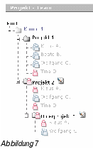

<!DOCTYPE HTML PUBLIC "-//W3C//DTD HTML 3.2//EN">
<HTML>
<HEAD>
	<META HTTP-EQUIV="CONTENT-TYPE" CONTENT="text/html; charset=iso-8859-15">
	<TITLE>v:p timetool 2.0</TITLE>
	<META NAME="GENERATOR" CONTENT="OpenOffice.org 1.1.0  (Linux)">
	<META NAME="AUTHOR" CONTENT="Giampaolo Pant&ograve;">
	<META NAME="CREATED" CONTENT="20030326;10253100">
	<META NAME="CHANGEDBY" CONTENT="Giampaolo Pant&ograve;">
	<META NAME="CHANGED" CONTENT="20031107;11470300">
	<META NAME="CLASSIFICATION" CONTENT="Handbuch">
</HEAD>
<BODY LANG="de-DE" LINK="#0000ff" DIR="LTR">
<DIV TYPE=HEADER>
	<P ALIGN=RIGHT><BR>
	<P ALIGN=RIGHT><BR>
	<P ALIGN=RIGHT><BR>
	<P ALIGN=RIGHT><BR>
	<P ALIGN=RIGHT><BR>
</DIV>
<DL>
	<DT><P><FONT FACE="Arial"><FONT SIZE=3><B><BR><BR><BR><SDFIELD TYPE=DOCINFO SUBTYPE=THEME>Handbuch</SDFIELD></B></FONT></FONT></DL>
<P ALIGN=JUSTIFY>
<FONT FACE="Arial"><FONT SIZE=2>Projektzeiterfassung <B>&middot;</B>
Verwaltung <B>&middot;</B> Visualisierung</FONT></FONT><P ALIGN=JUSTIFY>
<BR>
<P ALIGN=JUSTIFY><BR>
<P ALIGN=JUSTIFY><BR>
<P ALIGN=JUSTIFY><BR>
<P ALIGN=JUSTIFY><BR>
<P ALIGN=JUSTIFY><BR>
<P ALIGN=JUSTIFY><BR CLEAR=LEFT><BR>
<P ALIGN=JUSTIFY><BR>
<P ALIGN=JUSTIFY><BR>
<P ALIGN=JUSTIFY><BR>
<P ALIGN=JUSTIFY><BR>
<P ALIGN=JUSTIFY><BR>
<P ALIGN=JUSTIFY><BR>
<P ALIGN=JUSTIFY><BR>
<P ALIGN=JUSTIFY><BR>
<P ALIGN=JUSTIFY><BR>
<P ALIGN=JUSTIFY><BR>
<P ALIGN=JUSTIFY><BR>
<P ALIGN=JUSTIFY><BR>
<P ALIGN=JUSTIFY><BR>
<P ALIGN=JUSTIFY><BR>
<DIV ID="Inhaltsverzeichnis1" DIR="LTR">
	<DIV ID="Inhaltsverzeichnis1_Head" DIR="LTR">
		<P ALIGN=JUSTIFY><FONT FACE="Arial"><FONT SIZE=3><B>Inhaltsverzeichnis</B></FONT></FONT></P>
	</DIV>
	<P ALIGN=JUSTIFY><FONT FACE="Arial"><FONT SIZE=2><B>1  Einleitung	4</B></FONT></FONT></P>
	<P ALIGN=JUSTIFY><FONT FACE="Arial"><FONT SIZE=2><B>2 
	Produktbeschreibung	5</B></FONT></FONT></P>
	<P ALIGN=JUSTIFY><FONT FACE="Arial"><FONT SIZE=2>2.1  Einf&uuml;hrung	5</FONT></FONT></P>
	<P ALIGN=JUSTIFY><FONT FACE="Arial"><FONT SIZE=2>2.2 
	Entscheidungshilfe	6</FONT></FONT></P>
	<P ALIGN=JUSTIFY><FONT FACE="Arial"><FONT SIZE=2><B>3  Benutzer	7</B></FONT></FONT></P>
	<P ALIGN=JUSTIFY><FONT FACE="Arial"><FONT SIZE=2>3.1 
	Administrator	7</FONT></FONT></P>
	<DL>
		<DD><P ALIGN=JUSTIFY><FONT FACE="Arial"><FONT SIZE=2>3.1.1 
		Administrator anlegen	7</FONT></FONT></P>
		<DD><P ALIGN=JUSTIFY><FONT FACE="Arial"><FONT SIZE=2>3.1.2 
		Verwaltungsaufgaben	7</FONT></FONT></P>
	</DL>
	<P ALIGN=JUSTIFY><FONT FACE="Arial"><FONT SIZE=2>3.2 
	Standard-Benutzer	7</FONT></FONT></P>
	<DL>
		<DD><P ALIGN=JUSTIFY><FONT FACE="Arial"><FONT SIZE=2>3.2.1 
		Projektleiter	7</FONT></FONT></P>
		<DD><P ALIGN=JUSTIFY><FONT FACE="Arial"><FONT SIZE=2>3.2.2 
		Mitarbeiter	8</FONT></FONT></P>
	</DL>
	<P ALIGN=JUSTIFY><FONT FACE="Arial"><FONT SIZE=2>3.3 
	Gegen&uuml;berstellung der Benutzer	8</FONT></FONT></P>
	<P ALIGN=JUSTIFY><FONT FACE="Arial"><FONT SIZE=2><B>4  Projekte	9</B></FONT></FONT></P>
	<P ALIGN=JUSTIFY><FONT FACE="Arial"><FONT SIZE=2>4.1  Was ist ein
	Projekt?	9</FONT></FONT></P>
	<P ALIGN=JUSTIFY><FONT FACE="Arial"><FONT SIZE=2>4.2  Projekte im
	openTimetool	9</FONT></FONT></P>
	<DL>
		<DD><P ALIGN=JUSTIFY><FONT FACE="Arial"><FONT SIZE=2>4.2.1 
		Eigenschaften eines Projektes	9</FONT></FONT></P>
		<DD><P ALIGN=JUSTIFY><FONT FACE="Arial"><FONT SIZE=2>4.2.1.1 
		G&uuml;ltigkeitsdauer eines Projektes	9</FONT></FONT></P>
		<DD><P ALIGN=JUSTIFY><FONT FACE="Arial"><FONT SIZE=2>4.2.1.2 
		Monatliches Abschlie&szlig;en eines Projektes	10</FONT></FONT></P>
		<DD><P ALIGN=JUSTIFY><FONT FACE="Arial"><FONT SIZE=2>4.2.1.3 
		Runden der Zeiten	10</FONT></FONT></P>
		<DD><P ALIGN=JUSTIFY><FONT FACE="Arial"><FONT SIZE=2>4.2.1.4 
		Maximaler Aufwand	10</FONT></FONT></P>
		<DD><P ALIGN=JUSTIFY><FONT FACE="Arial"><FONT SIZE=2>4.2.2 
		Projekt-Teams	11</FONT></FONT></P>
	</DL>
	<P ALIGN=JUSTIFY><FONT FACE="Arial"><FONT SIZE=2>4.3  Bedienung	11</FONT></FONT></P>
	<DL>
		<DD><P ALIGN=JUSTIFY><FONT FACE="Arial"><FONT SIZE=2>4.3.1 
		&Uuml;bersicht	11</FONT></FONT></P>
		<DD><P ALIGN=JUSTIFY><FONT FACE="Arial"><FONT SIZE=2>4.3.2  Projekt
		hinzuf&uuml;gen	12</FONT></FONT></P>
		<DD><P ALIGN=JUSTIFY><FONT FACE="Arial"><FONT SIZE=2>4.3.3  Projekt
		editieren	12</FONT></FONT></P>
		<DD><P ALIGN=JUSTIFY><FONT FACE="Arial"><FONT SIZE=2>4.3.3.1 
		Projekteigenschaften &auml;ndern	12</FONT></FONT></P>
		<DD><P ALIGN=JUSTIFY><FONT FACE="Arial"><FONT SIZE=2>4.3.3.2 
		Projekt verschieben	13</FONT></FONT></P>
		<DD><P ALIGN=JUSTIFY><FONT FACE="Arial"><FONT SIZE=2>4.3.4  Teams
		bilden und verwalten	13</FONT></FONT></P>
	</DL>
	<P ALIGN=JUSTIFY><FONT FACE="Arial"><FONT SIZE=2><B>5 
	T&auml;tigkeiten	14</B></FONT></FONT></P>
	<P ALIGN=JUSTIFY><FONT FACE="Arial"><FONT SIZE=2>5.1  Was ist eine
	T&auml;tigkeit?	14</FONT></FONT></P>
	<P ALIGN=JUSTIFY><FONT FACE="Arial"><FONT SIZE=2>5.2  T&auml;tigkeiten
	im openTimetool	14</FONT></FONT></P>
	<DL>
		<DD><P ALIGN=JUSTIFY><FONT FACE="Arial"><FONT SIZE=2>5.2.1 
		Eigenschaften einer T&auml;tigkeit	14</FONT></FONT></P>
		<DD><P ALIGN=JUSTIFY><FONT FACE="Arial"><FONT SIZE=2>5.2.1.1 
		Projektabh&auml;ngigkeit	14</FONT></FONT></P>
		<DD><P ALIGN=JUSTIFY><FONT FACE="Arial"><FONT SIZE=2>5.2.1.2  Zeit
		f&uuml;r die T&auml;tigkeit berechnen	14</FONT></FONT></P>
	</DL>
	<P ALIGN=JUSTIFY><FONT FACE="Arial"><FONT SIZE=2>5.3  Bedienung	15</FONT></FONT></P>
	<DL>
		<DD><P ALIGN=JUSTIFY><FONT FACE="Arial"><FONT SIZE=2>5.3.1 
		&Uuml;bersicht	15</FONT></FONT></P>
		<DD><P ALIGN=JUSTIFY><FONT FACE="Arial"><FONT SIZE=2>5.3.2 
		T&auml;tigkeit hinzuf&uuml;gen	15</FONT></FONT></P>
		<DD><P ALIGN=JUSTIFY><FONT FACE="Arial"><FONT SIZE=2>5.3.3 
		T&auml;tigkeit &auml;ndern	16</FONT></FONT></P>
		<DD><P ALIGN=JUSTIFY><FONT FACE="Arial"><FONT SIZE=2>5.3.4 
		T&auml;tigkeit l&ouml;schen	16</FONT></FONT></P>
	</DL>
	<P ALIGN=JUSTIFY><FONT FACE="Arial"><FONT SIZE=2><B>6  Zeiten
	erfassen	17</B></FONT></FONT></P>
	<P ALIGN=JUSTIFY><FONT FACE="Arial"><FONT SIZE=2>6.1  Wie Zeiten
	erfasst werden	17</FONT></FONT></P>
	<P ALIGN=JUSTIFY><FONT FACE="Arial"><FONT SIZE=2>6.2  Wie das
	openTimetool die Zeiten verwaltet	17</FONT></FONT></P>
	<P ALIGN=JUSTIFY><FONT FACE="Arial"><FONT SIZE=2>6.3  Zeiten
	erfassen mit openTimetool	18</FONT></FONT></P>
	<DL>
		<DD><P ALIGN=JUSTIFY><FONT FACE="Arial"><FONT SIZE=2>6.3.1 
		Today-Log	18</FONT></FONT></P>
		<DD><P ALIGN=JUSTIFY><FONT FACE="Arial"><FONT SIZE=2>6.3.2 
		Quick-Log	18</FONT></FONT></P>
		<DD><P ALIGN=JUSTIFY><FONT FACE="Arial"><FONT SIZE=2>6.3.3 
		Multi-Log	19</FONT></FONT></P>
		<DD><P ALIGN=JUSTIFY><FONT FACE="Arial"><FONT SIZE=2>6.3.4 
		Period-Log	20</FONT></FONT></P>
		<DD><P ALIGN=JUSTIFY><FONT FACE="Arial"><FONT SIZE=2>6.3.5 
		Hot-Keys	20</FONT></FONT></P>
	</DL>
	<P ALIGN=JUSTIFY><FONT FACE="Arial"><FONT SIZE=2><B>7  Zeiten
	auswerten	21</B></FONT></FONT></P>
	<P ALIGN=JUSTIFY><FONT FACE="Arial"><FONT SIZE=2>7.1 
	Grunds&auml;tzliches zur Auswertung	21</FONT></FONT></P>
	<DL>
		<DD><P ALIGN=JUSTIFY><FONT FACE="Arial"><FONT SIZE=2>7.1.1  Der
		'einfache' Filter	21</FONT></FONT></P>
		<DD><P ALIGN=JUSTIFY><FONT FACE="Arial"><FONT SIZE=2>7.1.2  Der
		'erweiterte' Filter	21</FONT></FONT></P>
	</DL>
	<P ALIGN=JUSTIFY><FONT FACE="Arial"><FONT SIZE=2>7.2  M&ouml;glichkeiten
	der Auswertung	22</FONT></FONT></P>
	<DL>
		<DD><P ALIGN=JUSTIFY><FONT FACE="Arial"><FONT SIZE=2>7.2.1  F&uuml;r
		den Administrator	22</FONT></FONT></P>
		<DD><P ALIGN=JUSTIFY><FONT FACE="Arial"><FONT SIZE=2>7.2.2  F&uuml;r
		den Projektleiter	22</FONT></FONT></P>
		<DD><P ALIGN=JUSTIFY><FONT FACE="Arial"><FONT SIZE=2>7.2.3  F&uuml;r
		den Mitarbeiter	22</FONT></FONT></P>
	</DL>
	<P ALIGN=JUSTIFY><FONT FACE="Arial"><FONT SIZE=2>7.3 
	Wochen&uuml;bersicht	22</FONT></FONT></P>
	<P ALIGN=JUSTIFY><FONT FACE="Arial"><FONT SIZE=2>7.4 
	Projekt&uuml;bersicht	23</FONT></FONT></P>
	<P ALIGN=JUSTIFY><FONT FACE="Arial"><FONT SIZE=2><B>8  Zeiten
	exportieren	24</B></FONT></FONT></P>
	<P ALIGN=JUSTIFY><FONT FACE="Arial"><FONT SIZE=2>8.1  HTML-Export	24</FONT></FONT></P>
	<P ALIGN=JUSTIFY><FONT FACE="Arial"><FONT SIZE=2>8.2  OpenOffice.org
	Templates	24</FONT></FONT></P>
	<P ALIGN=JUSTIFY><FONT FACE="Arial"><FONT SIZE=2>8.3  Bedienung	24</FONT></FONT></P>
	<DL>
		<DD><P ALIGN=JUSTIFY><FONT FACE="Arial"><FONT SIZE=2>8.3.1 
		Exportfilter	24</FONT></FONT></P>
		<DD><P ALIGN=JUSTIFY><FONT FACE="Arial"><FONT SIZE=2>8.3.2 
		Export	25</FONT></FONT></P>
		<DD><P ALIGN=JUSTIFY><FONT FACE="Arial"><FONT SIZE=2>8.3.2.1 
		HTML-Export (Drucken oder nach PDF)	25</FONT></FONT></P>
		<DD><P ALIGN=JUSTIFY><FONT FACE="Arial"><FONT SIZE=2>8.3.2.2 
		OpenOffice.org-Export	25</FONT></FONT></P>
	</DL>
	<P ALIGN=JUSTIFY><FONT FACE="Arial"><FONT SIZE=2><B>9  Allgemeine
	Features	26</B></FONT></FONT></P>
	<P ALIGN=JUSTIFY><FONT FACE="Arial"><FONT SIZE=2>9.1  Kalender	26</FONT></FONT></P>
	<P ALIGN=JUSTIFY><FONT FACE="Arial"><FONT SIZE=2>9.2 
	Auto-Correct	26</FONT></FONT></P>
	<DL>
		<DD><P ALIGN=JUSTIFY><FONT FACE="Arial"><FONT SIZE=2>9.2.1 
		Auto-Correct Datum	26</FONT></FONT></P>
		<DD><P ALIGN=JUSTIFY><FONT FACE="Arial"><FONT SIZE=2>9.2.2 
		Auto-Correct Zeit	27</FONT></FONT></P>
		<DD><P ALIGN=JUSTIFY><FONT FACE="Arial"><FONT SIZE=2>9.2.3 
		Auto-Correct Projekt-Task	27</FONT></FONT></P>
	</DL>
	<P ALIGN=JUSTIFY><FONT FACE="Arial"><FONT SIZE=2><B>10 
	Fehlermeldungen	29</B></FONT></FONT></P>
	<P ALIGN=JUSTIFY><FONT FACE="Arial"><FONT SIZE=2><B>11  Meldungen	34</B></FONT></FONT></P>
	<P ALIGN=JUSTIFY><FONT FACE="Arial"><FONT SIZE=2><B>12  Technische
	Voraussetzungen	35</B></FONT></FONT></P>
	<P ALIGN=JUSTIFY><FONT FACE="Arial"><FONT SIZE=2>12.1  Client
	(Benutzer-Rechner)	35</FONT></FONT></P>
	<P ALIGN=JUSTIFY><FONT FACE="Arial"><FONT SIZE=2>12.2  Server	35</FONT></FONT></P>
	<DL>
		<DD><P ALIGN=JUSTIFY><FONT FACE="Arial"><FONT SIZE=2>12.2.1 
		Hardware (Minimum)	35</FONT></FONT></P>
		<DD><P ALIGN=JUSTIFY><FONT FACE="Arial"><FONT SIZE=2>12.2.2 
		Software (optimal)	36</FONT></FONT></P>
		<DD><P ALIGN=JUSTIFY><FONT FACE="Arial"><FONT SIZE=2>12.2.3 
		Authentifizierung	36</FONT></FONT></P>
	</DL>
	<P ALIGN=JUSTIFY><FONT FACE="Arial"><FONT SIZE=2><B>13  Fragen und
	Antworten	37</B></FONT></FONT></P>
	<P ALIGN=JUSTIFY><FONT FACE="Arial"><FONT SIZE=2><B>14  Begriffe	38</B></FONT></FONT></P>
</DIV>
<P ALIGN=JUSTIFY><BR><BR>
</P>
<H1 ALIGN=JUSTIFY><A NAME="intro"></A><FONT FACE="Arial"><FONT SIZE=3>1 Einleitung</FONT></FONT></H1>
<P ALIGN=JUSTIFY><FONT FACE="Arial"><FONT SIZE=2>Sie kennen das
Problem: Am Ende des Monats muss die Abrechnung erledigt werden.
Neben der eigentlichen Arbeit, die zu bew&auml;ltigen ist, m&uuml;ssen
nun auch die Stunden der Mitarbeiter zusammen gesucht werden,
zus&auml;tzlich waren da auch noch einige freie Mitarbeiter, die
extern an Projekten oder f&uuml;r Mandanten gearbeitet haben und ihre
Stundennachweise einmal als E-Mail, ein anderes Mal als Excel
Dokument oder schlicht als einfaches Blatt Papier abgeben. Au&szlig;erdem
werden laut Statistik mit herk&ouml;mmlichen Aufzeichnungsmethoden
(Tabellen&shy;kalkulationen, handschriftlich auf Papier, etc.) im
Schnitt nur <SUP>2</SUP>/<SUB>3</SUB> der tats&auml;chlich ben&ouml;tigten
Zeit f&uuml;r ein Projekt erfasst.</FONT></FONT><P ALIGN=JUSTIFY>
<FONT FACE="Arial"><FONT SIZE=2>Zudem w&uuml;rden Sie sich gerne
wieder die Zeit daf&uuml;r nehmen, ein bestimmtes Projekt genauer
betrachten und verfolgen zu k&ouml;nnen. Stimmen die kalkulierten
Preise? Fallen unter Umst&auml;nden Aufw&auml;nde an, die zu
Projektbeginn nicht absehbar waren? Gibt es bestimmte T&auml;tigkeiten
die Ihr Personal unn&ouml;tig stark einbinden und dadurch eine Um-
oder Neuorganisierung erfordern?</FONT></FONT><P ALIGN=JUSTIFY>
<FONT FACE="Arial"><FONT SIZE=2>F&uuml;r eine erhebliche
Unterst&uuml;tzung und Vereinfachung sorgt hier eine <I>zentrale</I>
Ablage der Zeiterfassung, die zugleich M&ouml;glichkeiten zur
<I>dezentralen</I> Erfassung bietet: <B><FONT SIZE=2><FONT FACE="Arial">openTimetool</FONT></FONT></B></FONT></FONT><P ALIGN=JUSTIFY>
<BR>
<P ALIGN=JUSTIFY><FONT FACE="Arial"><FONT SIZE=2>Mehrsprachig:
deutsch, englisch und spanisch</FONT></FONT><H1 ALIGN=JUSTIFY>
<A NAME="description"></A><FONT FACE="Arial"><FONT SIZE=3>2 Produktbeschreibung</FONT></FONT></H1>
<P ALIGN=JUSTIFY><FONT FACE="Arial"><FONT SIZE=2>Mit openTimetool
erhalten Sie <I>die</I> M&ouml;glichkeit, Kunden/Projekte/T&auml;tigkeiten
in Ihrem Betrieb effektiv und &uuml;bersichtlich zu erfassen, zu
verwalten und zu visualisieren.</FONT></FONT><P ALIGN=JUSTIFY>
<FONT FACE="Arial"><FONT SIZE=2>Durch die offene und flexible
Eingabe- und Verwaltungsstruktur ist der Einsatz von openTimetool in
allen Dienstleistungsunternehmen unabh&auml;ngig von der Branche
problemlos m&ouml;glich: Selbstst&auml;ndige, Konstruktions&shy;b&uuml;ros,
Agenturen und EDV-Support Firmen, genau so wie Steuerberater,
Rechts&shy;anw&auml;lte und externe Kundenbetreuer.</FONT></FONT><P ALIGN=JUSTIFY>
<BR>
<P ALIGN=JUSTIFY><FONT FACE="Arial"><FONT SIZE=2>openTimetool in
Stichworte:</FONT></FONT>
<UL><LI><P ALIGN=JUSTIFY>
	<FONT FACE="Arial"><FONT SIZE=2>Branchenunabh&auml;ngig</FONT></FONT><LI><P ALIGN=JUSTIFY>
	<FONT FACE="Arial"><FONT SIZE=2>f&uuml;r Freiberufler und
	Selbst&auml;ndige (asp-Variante) sowie f&uuml;r kleine, mittlere und<SPAN LANG="de-DE">
	gro&szlig;e </SPAN>Unternehmen (net-, mix- und custom- Variante)</FONT></FONT><LI><P ALIGN=JUSTIFY>
	<FONT FACE="Arial"><FONT SIZE=2>zentrale Zeiterfassung auf einem
	Server (Einsatz als &bdquo;Application Service Providing&ldquo;
	und/oder lokal in Ihrem Unternehmen auf einem/Ihrem Server)</FONT></FONT><LI><P ALIGN=JUSTIFY>
	<FONT FACE="Arial"><FONT SIZE=2>dezentrale Eingabe und
	Administration der gesamten Anwendung &uuml;ber alle online-f&auml;higen
	Medien (PC, Notebook, PDA, Handy, etc.)</FONT></FONT><LI><P ALIGN=JUSTIFY>
	<FONT FACE="Arial"><FONT SIZE=2>keine zeitaufwendige, lokale
	Installation auf einzelne Rechner (Clients) notwendig</FONT></FONT><LI><P ALIGN=JUSTIFY>
	<FONT FACE="Arial"><FONT SIZE=2>&uuml;ber Standard-Browser bedienbar
	(Netscape, Opera, IExplorer, usw...)</FONT></FONT><LI><P ALIGN=JUSTIFY>
	<FONT FACE="Arial"><FONT SIZE=2>Mehrsprachig: deutsch, englisch,
	spanisch (andere Sprachen in Vorbereitung bzw. auf Anfrage).</FONT></FONT></UL>
<H2 ALIGN=JUSTIFY><A NAME="description_intro"></A><FONT FACE="Arial"><FONT SIZE=2>2.1 Einf&uuml;hrung</FONT></FONT></H2>
<P ALIGN=JUSTIFY><FONT FACE="Arial"><FONT SIZE=2>openTimetool ist im
hohen Ma&szlig;e flexibel und individuell anpassbar (sog.
Customizing), bleibt dabei aber in der Bedienung und Pflege dennoch
einfach und funktionell.</FONT></FONT><P ALIGN=JUSTIFY>
<FONT FACE="Arial"><FONT SIZE=2><FONT SIZE=2><FONT FACE="Arial">Ausschlaggebend
f&uuml;r den beliebigen Einsatz in den unterschiedlichsten Branchen
ist, vereinfacht ausgedr&uuml;ckt, die &bdquo;Sicht der Dinge&ldquo;,
also die Art der Darstellung und</FONT></FONT> die transparente
Verwaltung der Daten. Obwohl <FONT SIZE=2><FONT FACE="Arial">openTimetool
eine hierarchische, baum&auml;hnliche Struktur verwaltet, ist dessen
Anordnung dennoch frei konfigurierbar.</FONT></FONT></FONT></FONT><P ALIGN=JUSTIFY>
<BR>
<P ALIGN=JUSTIFY><FONT FACE="Arial"><FONT SIZE=2>Dies soll anhand der
folgenden Beispiele aufgezeigt werden:</FONT></FONT><P ALIGN=JUSTIFY>
<FONT FACE="Arial"><FONT SIZE=2>Steuerberater A verwaltet die f&uuml;r
seine Mandanten angefallene Zeit nach folgendem Schema:</FONT></FONT><DL>
	<DL>
		<DL>
			<DL>
				<DD>
				<TABLE WIDTH=174 BORDER=1 CELLPADDING=3 CELLSPACING=0>
					<COL WIDTH=166>
					<THEAD>
						<TR>
							<TD WIDTH=166 VALIGN=TOP>
								<P ALIGN=JUSTIFY><FONT FACE="Arial"><FONT SIZE=1>	Mandant 1</FONT></FONT></P>
								<P ALIGN=JUSTIFY><FONT FACE="Arial"><FONT SIZE=1>		Steuer
								2000</FONT></FONT></P>
								<P ALIGN=JUSTIFY><FONT FACE="Arial"><FONT SIZE=1>		Steuer
								2001</FONT></FONT></P>
								<P ALIGN=JUSTIFY><FONT FACE="Arial"><FONT SIZE=1>	Mandant 2</FONT></FONT></P>
								<P ALIGN=JUSTIFY><FONT FACE="Arial"><FONT SIZE=1>		Immobilie
								ABC</FONT></FONT></P>
								<P ALIGN=JUSTIFY><FONT FACE="Arial"><FONT SIZE=1>		Steuer
								2000</FONT></FONT></P>
								<P ALIGN=JUSTIFY><FONT FACE="Arial"><FONT SIZE=1>		Steuer
								2001</FONT></FONT></P>
								<P ALIGN=JUSTIFY><FONT FACE="Arial"><FONT SIZE=1>	Mandant 3</FONT></FONT></P>
								<P ALIGN=JUSTIFY><FONT FACE="Arial"><FONT SIZE=1>		Steuer
								2001</FONT></FONT></P>
								<P ALIGN=JUSTIFY><FONT FACE="Arial"><FONT SIZE=1>	...</FONT></FONT></TD>
						</TR>
					</THEAD>
				</TABLE>
			</DL>
		</DL>
	</DL>
</DL>
<P ALIGN=JUSTIFY><FONT FACE="Arial"><FONT SIZE=2>Im Gegensatz dazu
ben&ouml;tigt die Firma B, die f&uuml;r verschiedene Kunden
Werbeprojekte durchf&uuml;hrt, folgende Struktur:</FONT></FONT><P ALIGN=JUSTIFY>
<BR>
<CENTER>
	<TABLE WIDTH=175 BORDER=1 CELLPADDING=3 CELLSPACING=0>
		<COL WIDTH=167>
		<THEAD>
			<TR>
				<TD WIDTH=167 VALIGN=TOP>
					<P ALIGN=JUSTIFY><FONT FACE="Arial"><FONT SIZE=1>	Kunde 1</FONT></FONT></P>
					<P ALIGN=JUSTIFY><FONT FACE="Arial"><FONT SIZE=1>		Projekt Kunst</FONT></FONT></P>
					<P ALIGN=JUSTIFY><FONT FACE="Arial"><FONT SIZE=1>		Projekt TV</FONT></FONT></P>
					<P ALIGN=JUSTIFY><FONT FACE="Arial"><FONT SIZE=1>	Kunde 2</FONT></FONT></P>
					<P ALIGN=JUSTIFY><FONT FACE="Arial"><FONT SIZE=1>		Projekt 4sat</FONT></FONT></P>
					<P ALIGN=JUSTIFY><FONT FACE="Arial"><FONT SIZE=1>		Projekt Radio</FONT></FONT></P>
					<P ALIGN=JUSTIFY><FONT FACE="Arial"><FONT SIZE=1>	...</FONT></FONT></TD>
			</TR>
		</THEAD>
	</TABLE>
</CENTER>
<P ALIGN=JUSTIFY><BR>
<P ALIGN=JUSTIFY><FONT FACE="Arial"><FONT SIZE=2>Zugleich ist
openTimetool durch unsere bew&auml;hrte Modularisierungstechnik so
ausgelegt, dass es mit Ihren Bed&uuml;rfnissen wachsen und somit
neuen Anforderungen gerecht werden kann. Sie fangen so zu sagen
&bdquo;klein&ldquo; an und erfassen und verwalten zun&auml;chst die
angefallenen Stunden Ihrer Mitarbeiter. Sp&auml;ter k&ouml;nnen Sie
sich dann f&uuml;r weitere Module (z.B. Kundenverwaltung, verteilte
ToDo Listen, u.v.a.) entscheiden, die einfach in Ihrem Paket
eingebunden und sofort verwendet werden k&ouml;nnen.</FONT></FONT><P ALIGN=JUSTIFY>
<FONT FACE="Arial"><FONT SIZE=2>Auf Wunsch erstellen wir nat&uuml;rlich
auch auf Ihrem Betrieb abgestimmte Module, die zus&auml;tzliche
Funktionalit&auml;t aus Ihrem EDV Bereich innerhalb openTimetool
abbilden &ndash; und umgekehrt. Somit stehen alle nur erdenkliche
Einsatz&shy;m&ouml;glichkeiten zur Integration bereit (Intranet,
Portale, u.v.m.).</FONT></FONT><H2 ALIGN=JUSTIFY>
<A NAME="description_decision"></A><FONT FACE="Arial"><FONT SIZE=2>2.2 Entscheidungshilfe</FONT></FONT></H2>
<P ALIGN=JUSTIFY><FONT FACE="Arial"><FONT SIZE=2>Die nachfolgende
Tabelle soll nur einen groben &Uuml;berblick darstellen, welche
Variante f&uuml;r Ihren Betrieb in Frage kommen k&ouml;nnte und kann
<I>keine</I> fundierte Beratung ersetzen: Rufen Sie uns an oder
verwenden Sie das Online-Formular und bestellen Sie heute noch den
<B><U>kostenlosen</U></B> Demo-Zugang!</FONT></FONT><P ALIGN=JUSTIFY>
<FONT FACE="Arial"><FONT SIZE=2>Damit k&ouml;nnen Sie openTimetool
unverbindlich testen und sich von der Leistungs&shy;f&auml;higkeit
&uuml;berzeugen.</FONT></FONT><P ALIGN=JUSTIFY>
<BR>
<CENTER>
	<TABLE WIDTH=429 BORDER=1 CELLPADDING=3 CELLSPACING=0>
		<COL WIDTH=19>
		<COL WIDTH=244>
		<COL WIDTH=146>
		<THEAD>
			<TR VALIGN=TOP>
				<TH WIDTH=19>
					<P ALIGN=CENTER><BR>
				</TH>
				<TH WIDTH=244>
					<P><FONT FACE="Arial"><FONT SIZE=1><I>Einsatzgebiet</I></FONT></FONT></TH>
				<TH WIDTH=146>
					<P><FONT FACE="Arial"><FONT SIZE=1><I>openTimetool Variante</I></FONT></FONT></TH>
			</TR>
		</THEAD>
		<TBODY>
			<TR>
				<TD WIDTH=19 VALIGN=TOP>
					<P ALIGN=CENTER><FONT FACE="Arial"><FONT SIZE=1>A</FONT></FONT></TD>
				<TD WIDTH=244 VALIGN=TOP>
					<UL>
						<LI><P ALIGN=JUSTIFY><FONT FACE="Arial"><FONT SIZE=1>Internetanbindung</FONT></FONT><LI><P ALIGN=JUSTIFY>
						<FONT FACE="Arial"><FONT SIZE=1>keinen eigenen internen Server</FONT></FONT></UL>
				</TD>
				<TD WIDTH=146>
					<P ALIGN=CENTER><FONT FACE="Arial"><FONT SIZE=1>asp</FONT></FONT><P ALIGN=CENTER>
					<FONT FACE="Arial"><FONT SIZE=1><I>(externer v:p-Server)</I></FONT></FONT></TD>
			</TR>
			<TR>
				<TD WIDTH=19 VALIGN=TOP>
					<P ALIGN=CENTER><FONT FACE="Arial"><FONT SIZE=1>B</FONT></FONT></TD>
				<TD WIDTH=244 VALIGN=TOP>
					<UL>
						<LI><P ALIGN=JUSTIFY><FONT FACE="Arial"><FONT SIZE=1>internes
						Netzwerk / Intranet vorhanden bzw. soll aufgebaut werden</FONT></FONT></UL>
					<UL>
						<LI><P ALIGN=JUSTIFY><FONT FACE="Arial"><FONT SIZE=1>interner
						Server vorhanden bzw. soll aufgebaut werden</FONT></FONT><LI><P ALIGN=JUSTIFY>
						<FONT FACE="Arial"><FONT SIZE=1>keine externe Mitarbeiter bzw.
						externer Zugriff auf das Firmennetzwerk m&ouml;glich</FONT></FONT></UL>
				</TD>
				<TD WIDTH=146>
					<P ALIGN=CENTER><FONT FACE="Arial"><FONT SIZE=1>net</FONT></FONT><P ALIGN=CENTER>
					<FONT FACE="Arial"><FONT SIZE=1><I>(interner Firmen-Server)</I></FONT></FONT></TD>
			</TR>
			<TR>
				<TD WIDTH=19 VALIGN=TOP>
					<P ALIGN=CENTER><FONT FACE="Arial"><FONT SIZE=1>C</FONT></FONT></TD>
				<TD WIDTH=244 VALIGN=TOP>
					<UL>
						<LI><P ALIGN=JUSTIFY><FONT FACE="Arial"><FONT SIZE=1>internes
						Netzwerk / Intranet vorhanden bzw. soll aufgebaut werden</FONT></FONT></UL>
					<UL>
						<LI><P ALIGN=JUSTIFY><FONT FACE="Arial"><FONT SIZE=1>interner
						Server vorhanden bzw. soll aufgebaut werden</FONT></FONT><LI><P ALIGN=JUSTIFY>
						<FONT FACE="Arial"><FONT SIZE=1>externe Mitarbeiter vorhanden</FONT></FONT><LI><P ALIGN=JUSTIFY>
						<FONT FACE="Arial"><FONT SIZE=1>kein externer Zugriff auf das
						Firmennetzwerk</FONT></FONT></UL>
				</TD>
				<TD WIDTH=146>
					<P ALIGN=CENTER><FONT FACE="Arial"><FONT SIZE=1>mix</FONT></FONT><P ALIGN=CENTER>
					<FONT FACE="Arial"><FONT SIZE=1><I>(asp &amp; net)</I></FONT></FONT></TD>
			</TR>
			<TR>
				<TD WIDTH=19 VALIGN=TOP>
					<P ALIGN=CENTER><FONT FACE="Arial"><FONT SIZE=1>D</FONT></FONT></TD>
				<TD WIDTH=244 VALIGN=TOP>
					<UL>
						<LI><P ALIGN=JUSTIFY><FONT FACE="Arial"><FONT SIZE=1>Sie
						m&ouml;chten openTimetool einsetzen, zus&auml;tzlich z.B. eine
						Kundendatenbank anbinden und weitere Informationen in einem
						Intranet f&uuml;r Ihre Mitarbeiter zur Verf&uuml;gung stellen,
						usw...<BR><I>Rufen Sie uns an!</I></FONT></FONT></UL>
				</TD>
				<TD WIDTH=146>
					<P ALIGN=CENTER><FONT FACE="Arial"><FONT SIZE=1>custom</FONT></FONT><P ALIGN=CENTER>
					<FONT FACE="Arial"><FONT SIZE=1><I>(individuelle L&ouml;sung)</I></FONT></FONT></TD>
			</TR>
		</TBODY>
	</TABLE>
</CENTER>
<H1 ALIGN=JUSTIFY><A NAME="user"></A><FONT FACE="Arial"><FONT SIZE=3>3 Benutzer</FONT></FONT></H1>
<P ALIGN=JUSTIFY><FONT FACE="Arial"><FONT SIZE=2>In der aktuellen
Version werden zwei Arten von Benutzern unterschieden:</FONT></FONT>
<UL>
	<UL><LI><P ALIGN=JUSTIFY>
		<FONT FACE="Arial"><FONT SIZE=2>Der Administrator und</FONT></FONT><LI><P ALIGN=JUSTIFY>
		<FONT FACE="Arial"><FONT SIZE=2>der Standard-Benutzer,</FONT></FONT></UL>
</UL>
<P ALIGN=JUSTIFY><FONT FACE="Arial"><FONT SIZE=2>wobei der
Adminstrator ebenfalls ein Standard-Benutzer ist &ndash; nur mit
erweiterten Rechten.</FONT></FONT><H2 ALIGN=JUSTIFY>
<A NAME="user_admin"></A><FONT FACE="Arial"><FONT SIZE=2>3.1 Administrator</FONT></FONT></H2>
<P ALIGN=JUSTIFY><FONT FACE="Arial"><FONT SIZE=2>Die Verwaltung
(anlegen, bearbeiten, l&ouml;schen) von Projekten, Kunden,
T&auml;tigkeiten und Benutzer kann nur ein Administrator durchf&uuml;hren.</FONT></FONT><H3 ALIGN=JUSTIFY>
<FONT FACE="Arial"><FONT SIZE=2>3.1.1 Administrator anlegen</FONT></FONT></H3>
<P ALIGN=JUSTIFY><FONT FACE="Arial"><FONT SIZE=2>Der Administrator<SPAN LANG="de-DE">
muss </SPAN>bei jeder Neuinstallation als erster Benutzer angelegt
werden (trifft auf die <I>asp</I> Version <U><I>nicht</I></U> zu &ndash;
hier ist dieser bereits eingerichtet). openTimetool erlaubt f&uuml;r
die Authentifizierung (Anmeldung) der Benutzer die Verwendung
unterschiedlichster Protokolle und Schnittstellen (siehe Kapitel&nbsp;12.2.3,
Seite&nbsp;36); aus diesem Grund<SPAN LANG="de-DE"> muss </SPAN>vor
der Einrichtung des Administrators zusammen mit dem Kunden festgelegt
werden, welche Technik eingesetzt werden soll.</FONT></FONT><H3 ALIGN=JUSTIFY>
<FONT FACE="Arial"><FONT SIZE=2>3.1.2 Verwaltungsaufgaben</FONT></FONT></H3>
<P ALIGN=JUSTIFY><FONT FACE="Arial"><FONT SIZE=2>S&auml;mtliche Daten
und Einstellungen, die im openTimetool vorhanden sind, k&ouml;nnen
vom Administrator ohne Einschr&auml;nkung angesehen und ver&auml;ndert
werden:</FONT></FONT>
<UL>
	<UL><LI><P ALIGN=JUSTIFY>
		<FONT FACE="Arial"><FONT SIZE=2>verwaltet <I>alle</I> Kunden,
		Projekte, T&auml;tigkeiten, Benutzer, sowie allgemeine
		Einstellungen</FONT></FONT><LI><P ALIGN=JUSTIFY>
		<FONT FACE="Arial"><FONT SIZE=2>Eingabe, Korrektur, &Uuml;bersicht,
		einzelner, mehrerer oder <I>aller</I> Benutzer (Zeiten und
		Einstellungen)</FONT></FONT><LI><P ALIGN=JUSTIFY>
		<FONT FACE="Arial"><FONT SIZE=2>Zusammenstellung <I>aller</I>
		erfassten Zeiten, um diese nach Kunden, Projekte, T&auml;tigkeiten,
		Benutzer und Zeitabschnitten auszugeben (Export nach
		OpenOffice.org, PDF und CSV, sowie Ausdruck)</FONT></FONT></UL>
</UL>
<P ALIGN=JUSTIFY><BR>
<P ALIGN=JUSTIFY><FONT FACE="Arial"><FONT SIZE=2><U>Achtun</U>g<U>:</U>
Durch den erweiterten Zugriff sollten Benutzer, die &uuml;ber
Administrator-Rechte verf&uuml;gen, besonders sorgf&auml;ltig bei der
Verarbeitung von Daten vorgehen.</FONT></FONT><H2 ALIGN=JUSTIFY>
<A NAME="user_standard"></A><FONT FACE="Arial"><FONT SIZE=2>3.2 Standard-Benutzer</FONT></FONT></H2>
<P ALIGN=JUSTIFY><FONT FACE="Arial"><FONT SIZE=2>In der vorliegenden
Version von openTimetool wird im Bezug auf den Lesemodus von Daten
zwischen &bdquo;Projektleiter&ldquo; und &bdquo;Mitarbeiter&ldquo;
unterschieden.</FONT></FONT><P ALIGN=JUSTIFY>
<FONT FACE="Arial"><FONT SIZE=2>Der Schreibmodus, also das Buchen von
Zeiten, bleibt dabei f&uuml;r beide Definitionen gleich.</FONT></FONT><H3 ALIGN=JUSTIFY>
<FONT FACE="Arial"><FONT SIZE=2>3.2.1 Projektleiter</FONT></FONT></H3>
<P ALIGN=JUSTIFY><FONT FACE="Arial"><FONT SIZE=2>Wird ein Benutzer
vom Administrator oder einem anderen Projektleiter f&uuml;r ein
Projekt als Projektleiter eingestuft (siehe Kapitel&nbsp;4.3.4,
Seite&nbsp;13), dann verf&uuml;gt dieser Benutzer &uuml;ber
zus&auml;tzliche Leserechte auf alle gebuchte Zeiten der Mitarbeiter,
die diesem Projekt zugeordnet sind.</FONT></FONT><P ALIGN=JUSTIFY>
<FONT FACE="Arial"><FONT SIZE=2>Alle weitere Zugriffe entsprechen
ansonsten die eines Mitarbeiters (eigene Zeiten buchen, &auml;ndern
und anzeigen).</FONT></FONT><H3 ALIGN=JUSTIFY>
<FONT FACE="Arial"><FONT SIZE=2>3.2.2 Mitarbeiter</FONT></FONT></H3>
<P ALIGN=JUSTIFY><FONT FACE="Arial"><FONT SIZE=2>Mitarbeiter sind
Benutzer, die vom Projektleiter oder Administrator zu Projekte
zugewiesen wurden (siehe Kapitel&nbsp;4.3.4, Seite&nbsp;13). Ein
solcher Benutzer kann also nur auf Projekte buchen, die f&uuml;r ihn
freigeschaltet wurden &ndash; die Anzeige aller anderen Projekte wird
unterdr&uuml;ckt. Zudem kann er <I>nur</I> eigene Zeiten einsehen und
ggfs. &auml;ndern.</FONT></FONT><H2 ALIGN=JUSTIFY>
<A NAME="user_compare"></A><FONT FACE="Arial"><FONT SIZE=2>3.3 Gegen&uuml;berstellung
der Benutzer</FONT></FONT></H2>
<TABLE WIDTH=420 BORDER=1 CELLPADDING=3 CELLSPACING=0>
	<COL WIDTH=169>
	<COL WIDTH=237>
	<THEAD>
		<TR VALIGN=TOP>
			<TH WIDTH=169>
				<P><FONT FACE="Arial"><FONT SIZE=1><I>Benutzer</I></FONT></FONT></TH>
			<TH WIDTH=237>
				<P><FONT FACE="Arial"><FONT SIZE=1><I>Zugriffsrechte / Aktionen</I></FONT></FONT></TH>
		</TR>
	</THEAD>
	<TBODY>
		<TR VALIGN=TOP>
			<TD WIDTH=169>
				<P ALIGN=JUSTIFY><FONT FACE="Arial"><FONT SIZE=1>Administrator</FONT></FONT></TD>
			<TD WIDTH=237>
				<P ALIGN=JUSTIFY><FONT FACE="Arial"><FONT SIZE=1>volle
				Zugriffsrechte.</FONT></FONT></TD>
		</TR>
		<TR VALIGN=TOP>
			<TD WIDTH=169>
				<P ALIGN=JUSTIFY><FONT FACE="Arial"><FONT SIZE=1>Standard-Benutzer
				&bdquo;Projektleiter&ldquo;</FONT></FONT></TD>
			<TD WIDTH=237>
				<P ALIGN=JUSTIFY><FONT FACE="Arial"><FONT SIZE=1>wird vom
				Administrator als &bdquo;Projektleiter&ldquo; definiert;<BR>kann
				eigene Projekte vollst&auml;ndig einsehen (aber <I>nicht</I>
				&auml;ndern), inkl. die erfassten Zeiten aller zugeh&ouml;rigen
				Mitarbeiter.</FONT></FONT></TD>
		</TR>
		<TR VALIGN=TOP>
			<TD WIDTH=169>
				<P ALIGN=JUSTIFY><FONT FACE="Arial"><FONT SIZE=1>Standard-Benutzer
				&bdquo;Mitarbeiter&ldquo;</FONT></FONT></TD>
			<TD WIDTH=237>
				<P ALIGN=JUSTIFY><FONT FACE="Arial"><FONT SIZE=1>kann nur eigene
				Zeiten einsehen und bearbeiten.</FONT></FONT></TD>
		</TR>
	</TBODY>
</TABLE>
<P ALIGN=JUSTIFY><BR>
<H1 ALIGN=JUSTIFY><A NAME="project"></A><FONT FACE="Arial"><FONT SIZE=3>4 Projekte</FONT></FONT></H1>
<P ALIGN=JUSTIFY><FONT FACE="Arial"><FONT SIZE=2>Dieses Kapitel
erl&auml;utert wof&uuml;r Projekte ben&ouml;tigt werden und wie Sie
Ihre Firmen&shy;struktur darin abbilden und verwalten k&ouml;nnen.</FONT></FONT><H2 ALIGN=JUSTIFY>
<A NAME="project_whatisit"></A><FONT FACE="Arial"><FONT SIZE=2>4.1 Was
ist ein Projekt?</FONT></FONT></H2>
<P ALIGN=JUSTIFY><FONT FACE="Arial"><FONT SIZE=2>Der Ausdruck
&bdquo;Projekt&ldquo; wird in openTimetool als Synonym f&uuml;r alle
zu verwaltenden Kostenstellen, ob dies Kunden, Projekte, Mandanten,
Zulieferer, Freiberufler, usw. sind, verwendet.</FONT></FONT><P ALIGN=JUSTIFY>
<FONT FACE="Arial"><FONT SIZE=2>Bevor Sie beginnen Projekte
anzulegen, sollten Sie &uuml;berlegen wie Ihre Firmen&shy;struktur am
besten abgebildet werden kann. Arbeiten Sie kundenorientiert,
projektorientiert oder nach einem anderen Schema? Sind Projekte immer
direkt einem Kunden zugeordnet (oder umgekehrt)?</FONT></FONT><P ALIGN=JUSTIFY>
<FONT FACE="Arial"><FONT SIZE=2>Wenn
Sie einmal Ihre Struktur festgelegt haben k&ouml;nnen Sie diese im
Nachhinein nat&uuml;rlich immer noch &auml;ndern, dies ist aber nicht
die empfohlene Vorgehensweise.</FONT></FONT><H2 ALIGN=JUSTIFY>
<FONT FACE="Arial"><FONT SIZE=2>4.2 Projekte im openTimetool</FONT></FONT></H2>
<P ALIGN=JUSTIFY><FONT FACE="Arial"><FONT SIZE=2>Im openTimetool
werden Projekte in einer Baumstruktur abgelegt. Das bedeutet, dass
Sie z.B. einem Kunden verschiedene Projekte zuordnen k&ouml;nnen oder
einem Projekt verschiedene Kunden. Die Tiefe des Baumes ist
unbegrenzt, somit k&ouml;nnen Sie einem Projekt beliebig viele
Unterprojekte zuordnen und diesen ebenfalls wieder weitere
Unterprojekte, usw.</FONT></FONT><P ALIGN=JUSTIFY>
<FONT FACE="Arial"><FONT SIZE=2>Damit
k&ouml;nnen Sie eine optimale Struktur erstellen, die Ihrer Kunden-
und Projektstruktur entspricht.</FONT></FONT><P ALIGN=JUSTIFY>
<FONT FACE="Arial"><FONT SIZE=2>Eine oft verwendete Projektstruktur
sehen Sie in Abbildung 1.</FONT></FONT><P ALIGN=JUSTIFY>
<FONT FACE="Arial"><FONT SIZE=2>Hier werden Zeiten auf die einzelnen
Ange&shy;bote/Unterprojekte gebucht. Der Administrator kann die
Aufw&auml;nde nach Angebot/Unterprojekt, aber auch zusammengefasst
f&uuml;r jedes Projekt einzeln, ein&shy;sehen.<BR></FONT></FONT><BR>
<H3 ALIGN=JUSTIFY><A NAME="project_properties"></A><FONT FACE="Arial"><FONT SIZE=2>4.2.1 Eigenschaften
eines Projektes</FONT></FONT></H3>
<P ALIGN=JUSTIFY><FONT FACE="Arial"><FONT SIZE=2>Ein Projekt wird
durch seinen Namen und seine Position im Projektbaum eindeutig
definiert. Jedem Projekt k&ouml;nnen Sie optional einen beliebigen
Kommentar hinzuf&uuml;gen.</FONT></FONT><H4 ALIGN=JUSTIFY>
<A NAME="project_properties_valid"></A><FONT FACE="Arial"><FONT SIZE=2>4.2.1.1 G&uuml;ltigkeitsdauer
eines Projektes</FONT></FONT></H4>
<P ALIGN=JUSTIFY><FONT FACE="Arial"><FONT SIZE=2>Die G&uuml;ltigkeitsdauer
wird verwendet, um Projekte mit einem Start- und/oder einem Enddatum
zu versehen und somit den Buchungszeitraum einzuschr&auml;nken. Damit
k&ouml;nnen Sie verhindern, dass Buchungen die Projektzeiten und
somit die Rechnungsstellung verf&auml;lschen.</FONT></FONT><P ALIGN=JUSTIFY>
<FONT FACE="Arial"><FONT SIZE=2>Projekte, die nicht mehr g&uuml;ltig
sind, werden in den Auswahlmen&uuml;s nicht mehr angezeigt.</FONT></FONT><P ALIGN=JUSTIFY>
<FONT FACE="Arial"><FONT SIZE=2>Ein Projekt kann optional mit einem
G&uuml;ltigkeitszeitraum versehen werden. Dieser gibt an, in welchem
Zeitraum auf dieses Projekt gebucht werden darf <FONT SIZE=2><FONT FACE="Arial">&ndash;</FONT></FONT>
alle Buchungen<SPAN LANG="de-DE"> au&szlig;erhalb </SPAN>dieses
Zeitraumes werden von der Applikation nicht zugelassen. Der
G&uuml;ltigkeitszeitraum wirkt sich nur auf die Zeitstempel, die
gebucht werden sollen, aus, nicht auf das Datum der Buchung selbst!</FONT></FONT><P ALIGN=JUSTIFY>
<FONT FACE="Arial"><FONT SIZE=2>Definieren Sie f&uuml;r ein Projekt
nur ein Startdatum, so kann ab diesem Datum beliebig lange gebucht
werden.</FONT></FONT><P ALIGN=JUSTIFY>
<FONT FACE="Arial"><FONT SIZE=2>Wird f&uuml;r ein Projekt ein
Enddatum definiert, so l&auml;sst die Applikation keine Buchungen
nach diesem Datum mehr zu.</FONT></FONT><P ALIGN=JUSTIFY>
<FONT FACE="Arial"><FONT SIZE=2>Wird ein Projekt mit einer
G&uuml;ltigkeitsdauer beschr&auml;nkt, so gilt diese ebenfalls f&uuml;r
alle seine Unterprojekte, d.h., wenn Sie einem Kunden Projekte
zugeordnet haben und f&uuml;r den Kunden einen G&uuml;ltigkeitszeitraum
definieren, gilt dieser ebenfalls f&uuml;r alle Projekte die Sie
unter diesem Kunden angelegt haben (sog. Vererbung).</FONT></FONT><H4 ALIGN=JUSTIFY>
<A NAME="project_properties_close"></A><FONT FACE="Arial"><FONT SIZE=2>4.2.1.2 Monatliches<SPAN LANG="de-DE">
Abschlie&szlig;en </SPAN>eines Projektes</FONT></FONT></H4>
<P ALIGN=JUSTIFY><FONT FACE="Arial"><FONT SIZE=2>Dies wird ben&ouml;tigt
um ein Datum festzulegen, wann alle Buchungen f&uuml;r den vorherigen
Monat durchgef&uuml;hrt werden m&uuml;ssen und mit der
Rechnungsstellung begonnen werden kann.</FONT></FONT><P ALIGN=JUSTIFY>
<FONT FACE="Arial"><FONT SIZE=2>Mit dieser Funktion k&ouml;nnen Sie
verhindern, dass zu einem Vormonat nachtr&auml;glich Zeiten durch
Mitarbeiter gebucht werden, obwohl die Rechnungs&shy;stellung bereits
durchgef&uuml;hrt wurde.</FONT></FONT><P ALIGN=JUSTIFY>
<FONT FACE="Arial"><FONT SIZE=2>F&uuml;r jedes Projekt kann definiert
werden, wann die letzte Buchung f&uuml;r einen abgelaufenen Monat
akzeptiert wird. Das<SPAN LANG="de-DE"> Abschlie&szlig;en </SPAN>eines
Projekte hat nichts mit dem G&uuml;ltigkeitszeitraum des Projektes zu
tun.</FONT></FONT><P ALIGN=JUSTIFY>
<FONT FACE="Arial"><FONT SIZE=2>Hier legen Sie fest<SPAN LANG="de-DE">
wie viele </SPAN>Arbeitstage im neuen Monat ein Projekt zu Verf&uuml;gung
steht um Buchungen f&uuml;r den vergangenen Monat nachzuholen.</FONT></FONT><P ALIGN=JUSTIFY>
<FONT FACE="Arial"><FONT SIZE=2>Die Werte werden an Ihre
Unterprojekte vererbt, d.h., wenn Sie einem Kunden Projekte
zugeordnet haben und f&uuml;r den Kunden das<SPAN LANG="de-DE">
Abschlie&szlig;en </SPAN>seiner Projekte nach 3 Arbeitstagen
einstellen, gilt dies standardm&auml;&szlig;ig ebenfalls f&uuml;r
alle Projekte unter diesem Kunden. Sie k&ouml;nnen aber auch einem
der Projekte explizit einen anderen Wert zuordnen.</FONT></FONT><H4 ALIGN=JUSTIFY>
<A NAME="project_properties_round"></A><FONT FACE="Arial"><FONT SIZE=2>4.2.1.3 Runden
der Zeiten</FONT></FONT></H4>
<P ALIGN=JUSTIFY><FONT FACE="Arial"><FONT SIZE=2>In manchen F&auml;llen
werden gerundete Buchungszeiten ben&ouml;tigt.</FONT></FONT><P ALIGN=JUSTIFY>
<FONT FACE="Arial"><FONT SIZE=2>Das Runden der Zeiten k&ouml;nnen Sie
ebenfalls f&uuml;r jedes Projekt einzeln einstellen. Die Zeiten
werden beim Buchen auf die eingegebene Genauigkeit gerundet und
abgespeichert. Damit k&ouml;nnen Sie z.B. erzwingen, dass Zeiten auf
15&nbsp;Minuten Genauigkeit gerundet werden. In diesem Fall werden
Buchungen zwischen 7:48&nbsp;Uhr und 8:07&nbsp;Uhr auf 8:00&nbsp;Uhr,
zwischen 8:08&nbsp;Uhr und 8:22&nbsp;Uhr auf 8:15&nbsp;Uhr gerundet,
usw.</FONT></FONT><P ALIGN=JUSTIFY>
<FONT FACE="Arial"><FONT SIZE=2>Die eingestellte Rundungen werden an
die Unterprojekte vererbt, d.h., wenn Sie einem Kunden Projekte
zugeordnet haben und f&uuml;r den Kunden ein Runden auf 10&nbsp;Minuten
Genauigkeit einstellen, gilt dies standardm&auml;&szlig;ig ebenfalls
f&uuml;r alle Projekte unter diesem Kunden. Sie k&ouml;nnen aber auch
einem der Projekte explizit einen anderen Rundungswert zuordnen.</FONT></FONT><H4 ALIGN=JUSTIFY>
<A NAME="project_properties_effort"></A><FONT FACE="Arial"><FONT SIZE=2>4.2.1.4 Maximaler
Aufwand</FONT></FONT></H4>
<P ALIGN=JUSTIFY><FONT FACE="Arial"><FONT SIZE=2>Mit dieser
Einstellung wird die grafische Darstellung unter '&Uuml;besicht nach
Projekt' beeinflusst (siehe Kapitel&nbsp;7.4, Seite&nbsp;23).</FONT></FONT><P ALIGN=JUSTIFY>
<FONT FACE="Arial"><FONT SIZE=2>Hier k&ouml;nnen Sie den maximalen
Aufwand in Stunden eingeben, das f&uuml;r ein Projekt anfallen darf.
&Uuml;berschreiten die gebuchten Zeiten den hier festgelegten Wert,
wird der &Uuml;berhang unter '&Uuml;besicht nach Projekt' farblich
besonders hervorgehoben.</FONT></FONT><H3 ALIGN=JUSTIFY>
<FONT FACE="Arial"><FONT SIZE=2>4.2.2 Projekt-Teams</FONT></FONT></H3>
<P ALIGN=JUSTIFY><FONT FACE="Arial"><FONT SIZE=2>Mit Projekt-Teams
werden die entsprechenden Zugriffsebenen gebildet. Damit werden
Projektleiter und Mitarbeiter den Projekten zugewiesen. Geh&ouml;rt
ein Mitarbeiter nicht zum Team eines Projektes, kann dieser auch
keine Zeiten darauf buchen.</FONT></FONT><H2 ALIGN=JUSTIFY>
<A NAME="project_use"></A><FONT FACE="Arial"><FONT SIZE=2>4.3 Bedienung</FONT></FONT></H2>
<P ALIGN=JUSTIFY><FONT FACE="Arial"><FONT SIZE=2>Dieses Kapitel
beschreibt die Benutzung der Applikation und die verschiedenen
Funktionalit&auml;ten der Projekt-Verwaltung.</FONT></FONT><H3 ALIGN=JUSTIFY>
<A NAME="project_overview"></A><FONT FACE="Arial"><FONT SIZE=2>4.3.1 &Uuml;bersicht</FONT></FONT></H3>
<P ALIGN=JUSTIFY><FONT FACE="Arial"><FONT SIZE=2>In der
&Uuml;bersichtstabelle im unteren Teil der Projektseite werden alle
Projekte und die dazugeh&ouml;renden Eigenschaften in der von Ihnen
definierten Baumstruktur angezeigt. Zur besseren &Uuml;bersicht
werden abgelaufene und f&uuml;r Sie nicht zug&auml;ngliche Projekte
in einer etwas unscheinbareren Farbe dargestellt. Nicht zug&auml;ngliche
Projekte bedeutet in diesem Fall, dass Sie kein Teammitglied sind und
deshalb auch nicht auf diese Projekte buchen d&uuml;rfen.</FONT></FONT><P ALIGN=JUSTIFY>
<FONT FACE="Arial"><FONT SIZE=2>Die Projekte einer Ebene sind in der
Anzeige nach Namen sortiert.</FONT></FONT><P ALIGN=JUSTIFY>
<FONT FACE="Arial"><FONT SIZE=2>Am Ende der Zeile eine Projektes
befindet sich der &Auml;ndern-Knopf 
,
&uuml;ber den Sie die Projekteigenschaften und die Position des
Projektes im Baum &auml;ndern k&ouml;nnen (siehe ).</FONT></FONT><P ALIGN=JUSTIFY>
<FONT FACE="Arial"><FONT SIZE=2>Zur besseren &Uuml;bersicht ist bei
Ihrem ersten Besuch nach dem Anmelden der Projektbaum eingeklappt.
Sie k&ouml;nnen entweder, wie von vielen Anwendungen gewohnt, einfach
durch Anklicken des Symbols 

vor dem Projektnamen die Unterprojekte anzeigen oder durch das
Anklicken von 

hinter dem Projektnamen den gesamten Baum ausklappen.</FONT></FONT><P ALIGN=JUSTIFY>
<FONT FACE="Arial"><FONT SIZE=2>Da
einige Eigenschaften, wie z.B. die Rundungsgenauigkeit, von Projekten
auf deren Unterprojekte &uuml;bernommen werden k&ouml;nnen (sog.
Vererbung), ist eine Funktionalit&auml;t eingebaut die Ihnen zeigt,
welche Werte wie zusammenh&auml;ngen. Z.B. wird bei Ihrem aktuellen
Projekt eine Rundungsgenauigkeit von 15 min. angezeigt, die Sie aber
nicht selbst eingestellt haben. Also wissen Sie das diese von dem
&Uuml;berprojekt &uuml;bernommen wird. Nur, welches Projekt ist dies
genau? In der folgenden Abbildung erkennen Sie den Vorzug dieser
Funktion.</FONT></FONT><P ALIGN=JUSTIFY>
<FONT FACE="Arial"><FONT SIZE=2>Sie
fahren mit der Maus &uuml;ber die Spalte, die die Rundungsgenauigkeit
f&uuml;r Ihr aktuelles Projekt anzeigt und der Eintrag von dem diese
Zeit &uuml;ber&shy;nommen wird, wird farblich hervor&shy;gehoben.</FONT></FONT><P ALIGN=JUSTIFY>
<FONT FACE="Arial"><FONT SIZE=2>Dies funktioniert genauso f&uuml;r
die Werte in der Spalte <SPAN LANG="de-DE">'Schlie&szlig;en',</SPAN>
die angibt nach<SPAN LANG="de-DE"> wie viel </SPAN>Arbeitstagen ein
Monat abgeschlossen werden soll.</FONT></FONT><H3 ALIGN=JUSTIFY>
<A NAME="project_add"></A><FONT FACE="Arial"><FONT SIZE=2>4.3.2 Projekt
hinzuf&uuml;gen</FONT></FONT></H3>
<P ALIGN=JUSTIFY><FONT FACE="Arial"><FONT SIZE=2>In der
Standardansicht der Projektseite (die Sie &uuml;ber die Navigation
Admin/ Projekte erreichen) erscheint im oberen Teil der Seite der
'Projekt hinzuf&uuml;gen'-Dialog.</FONT></FONT><P ALIGN=JUSTIFY>
<FONT FACE="Arial"><FONT SIZE=2>Geben
Sie Ihrem neuen Projekt einen Namen, ordnen Sie das Projekt einem
anderen Projekt unter, dieses bestimmen Sie in dem Auswahlfeld
'Vorg&auml;nger', und f&uuml;llen Sie die restlichen Felder aus
(siehe Kapitel&nbsp;4.2.1, Seite&nbsp;9).</FONT></FONT><P ALIGN=JUSTIFY>
<FONT FACE="Arial"><FONT SIZE=2>Dr&uuml;cken Sie 'Speichern'.
Darauf&shy;hin wird Ihr neues Projekt in den Baum, unter dem von
Ihnen angegebenen Projekt, eingef&uuml;gt. Dabei werden wie in
Kapitel&nbsp;4.2.1 (Seite&nbsp;9) be&shy;schrieben die Eigen&shy;schaften
&uuml;bernommen, falls diese nicht explizit angegeben wurden.</FONT></FONT><P ALIGN=JUSTIFY>
<FONT FACE="Arial"><FONT SIZE=2>Wenn Sie in der &Uuml;bersicht das
Projekt<SPAN LANG="de-DE"> aufgeklappt </SPAN>haben, unter dem Sie
Ihr neues Projekt hinzugef&uuml;gt haben, erscheint dieses sofort.</FONT></FONT><P ALIGN=JUSTIFY>
<FONT FACE="Arial"><FONT SIZE=2>Das erfolgreichen Speichern &ndash;
oder wenn ein Fehler aufgetreten ist &ndash; wird in einer Textbox
oben auf der Seite angezeigt.</FONT></FONT><H3 ALIGN=JUSTIFY>
<A NAME="project_edit"></A><FONT FACE="Arial"><FONT SIZE=2>4.3.3 Projekt
editieren</FONT></FONT></H3>
<P ALIGN=JUSTIFY><FONT FACE="Arial"><FONT SIZE=2>Klicken Sie den
'editieren'-Link am Ende einer Zeile in der &Uuml;bersichtstabelle.
Daraufhin erscheinen oben auf der Projektseite zwei Dialoge. Mit dem
Dialog auf der linken Seite ('Projekt editieren') k&ouml;nnen Sie
alle Eigenschaften eines Projektes &auml;ndern. In dem Dialog auf der
rechten Seite ('Projekt verschieben') k&ouml;nnen Sie das von Ihnen
angew&auml;hlte Projekt einem anderen Projekt unterordnen.</FONT></FONT><H4 ALIGN=JUSTIFY>
<FONT FACE="Arial"><FONT SIZE=2>4.3.3.1 Projekteigenschaften &auml;ndern</FONT></FONT></H4>
<P ALIGN=JUSTIFY><FONT FACE="Arial"><FONT SIZE=2>Der Dialog zum
&Auml;ndern der Eigenschaften eines Projektes unterscheidet sich kaum
vom 'Projekt hinzuf&uuml;gen'-Dialog (siehe Kapitel&nbsp;4.3.2,
Seite&nbsp;12).</FONT></FONT></P>
<P ALIGN=JUSTIFY><FONT FACE="Arial"><FONT SIZE=2>Die
Felder des Dialoges sind mit den aktuellen Daten des Projektes, das
Sie bearbeiten wollen, bereits ausgef&uuml;llt, so dass Sie nur die
zu &auml;ndernden Daten korrigieren brauchen.</FONT></FONT></P>
<P ALIGN=JUSTIFY><FONT FACE="Arial"><FONT SIZE=2>In der ersten Zeile
wird Ihnen der komplette Name des Projektes angezeigt, inklusive
aller &Uuml;berprojekte, damit Sie auf einen Blick sehen k&ouml;nnen
in welchem Teil des Baumes sich das Projekt befindet.</FONT></FONT></P>
<P ALIGN=JUSTIFY><FONT FACE="Arial"><FONT SIZE=2>Den Namen des
Projektes k&ouml;nnen Sie in der folgenden Zeile &auml;ndern. Hier<SPAN LANG="de-DE">
wiederum </SPAN>nur den wirklichen Namen des Projektes, keinen Namen
eines &uuml;bergeordneten Projektes, die m&uuml;ssen Sie in den
Eigenschaften des jeweiligen Projektes &auml;ndern.</FONT></FONT></P>
<H4 ALIGN=JUSTIFY><A NAME="project_move"></A><FONT FACE="Arial"><FONT SIZE=2>4.3.3.2 Projekt
verschieben</FONT></FONT></H4>
<P ALIGN=JUSTIFY><FONT FACE="Arial"><FONT SIZE=2>In diesem Dialog
k&ouml;nnen Sie ein Projekt innerhalb der Baumstruktur verschieben.</FONT></FONT></P>
<P ALIGN=JUSTIFY><FONT FACE="Arial"><FONT SIZE=2>Um
diesen Dialog zu erreichen klicken Sie zuvor den 'editieren'-Link in
der Projekt&shy;&uuml;bersicht. Daraufhin erscheint der Name des
ausgew&auml;hlten Projektes in der ersten Zeile dieses Dialoges und
Sie k&ouml;nnen in dem Auswahlfeld in der zweiten Zeile das Projekt
festlegen dem es untergeordnet werden soll.</FONT></FONT></P>
<P ALIGN=JUSTIFY><FONT FACE="Arial"><FONT SIZE=2>Dr&uuml;cken Sie
anschlie&szlig;end 'Speichern' und das Projekt wird an die von Ihnen
benannten Position verschoben, dabei werden die Projekte wie gewohnt
pro Ebene nach Namen sortiert wieder angezeigt.</FONT></FONT></P>
<P ALIGN=JUSTIFY><FONT FACE="Arial"><FONT SIZE=2>Das Verschieben
eines Projektes unter eines seiner Unterprojekte ist nicht gestattet
und wird auch nicht ausgef&uuml;hrt, da dieses eine Inkonsistenz in
der Datenstruktur zur Folge h&auml;tte.</FONT></FONT></P>
<H3 ALIGN=JUSTIFY><A NAME="project_team"></A><A NAME="project_edit_team"></A>
<FONT FACE="Arial"><FONT SIZE=2>4.3.4 Teams bilden und verwalten</FONT></FONT></H3>
<P ALIGN=JUSTIFY><FONT FACE="Arial"><FONT SIZE=2>Die Verwaltung von
Projekt-Teams erreichen Sie &uuml;ber den Men&uuml;punkt
'Projekt/Team' in der Navigation.</FONT></FONT></P>
<P ALIGN=JUSTIFY><FONT FACE="Arial"><FONT SIZE=2>In
unserem Beispiel wird dem Mitarbeiter 'Klaus A.' die Darstellung in Abbildung 7
erhalten. Er ist Mitglied 

im Team &bdquo;&nbsp;Projekt&nbsp;1&ldquo;.
Als Pro&shy;jektleiter 

von &bdquo;&nbsp;Projekt&nbsp;2&ldquo;
und &bdquo;&nbsp;Unter&shy;projekt&nbsp;1&ldquo;
hat er die M&ouml;glichkeit zus&auml;tzliche Mitarbeiter zu seinen
Projekten hinzuzuf&uuml;gen.</FONT></FONT></P>
<P ALIGN=JUSTIFY><FONT FACE="Arial"><FONT SIZE=2>Projekt-Teams, denen
dieser Mitarbeiter nicht zugeh&ouml;rt, werden in dieser Ansicht
automatisch ausgeblendet.</FONT></FONT></P>
<P ALIGN=JUSTIFY><FONT FACE="Arial"><FONT SIZE=2>F&uuml;r einen
Projektleiter bietet diese Auflistung einen schnellen &Uuml;berblick
&uuml;ber die Zusammen&shy;setzung des Projekt-Teams.</FONT></FONT></P>
<P ALIGN=JUSTIFY><FONT FACE="Arial"><FONT SIZE=2>Nur bereits
definierte Projektleiter und Administratoren k&ouml;nnen zus&auml;tzliche
Mitarbeiter zu einem Team aufnehmen. Dazu Klicken Sie den
'editieren'-Link am Ende einer Zeile an ().</FONT></FONT></P>
<P ALIGN=JUSTIFY><FONT FACE="Arial"><FONT SIZE=2>Darauf hin wird die
Bearbeitungsmaske angezeigt (). Sie k&ouml;nnen Benutzer aus der
linken Auswahl als Projektleiter oder Teammitglieder in die rechte
Auswahl &uuml;bernehmen. Bereits definierte Projektleiter k&ouml;nnen
zu Teammitglieder deklariert werden und umgekehrt.</FONT></FONT></P>
<P ALIGN=JUSTIFY><FONT FACE="Arial"><FONT SIZE=2>Bitte
beachten Sie, dass Benutzer, die bereits Zeiten f&uuml;r ein Projekt
gebucht haben, <U><I>nicht</I></U> mehr aus dem Projekt entfernt
werden k&ouml;nnen. Dies w&uuml;rde eine Inkonsistenz der Daten nach
sich f&uuml;hren.</FONT></FONT></P>
<P ALIGN=JUSTIFY><BR><BR>
</P>
<H1 ALIGN=JUSTIFY><A NAME="task"></A><FONT FACE="Arial"><FONT SIZE=3>5 T&auml;tigkeiten</FONT></FONT></H1>
<P ALIGN=JUSTIFY><FONT FACE="Arial"><FONT SIZE=2>Dieses Kapitel
erl&auml;utert wof&uuml;r T&auml;tigkeiten definiert werden m&uuml;ssen,
wo Sie diese m&ouml;glicherweise in Ihrer Firma wiederfinden und wie
Sie diese administrieren.</FONT></FONT><H2 ALIGN=JUSTIFY>
<A NAME="task_whatisit"></A><FONT FACE="Arial"><FONT SIZE=2>5.1 Was
ist eine T&auml;tigkeit?</FONT></FONT></H2>
<P ALIGN=JUSTIFY><FONT FACE="Arial"><FONT SIZE=2>T&auml;tigkeiten
sind immer wiederkehrende Arbeiten, die f&uuml;r jedes Projekt
anfallen (k&ouml;nnen). Da Ihr Unternehmen in einer speziellen
Branche t&auml;tig ist haben Sie sicher spezielle T&auml;tigkeiten
und wollen Ihre Zeiten auch diesen zuordnen.</FONT></FONT><P ALIGN=JUSTIFY>
<FONT FACE="Arial"><FONT SIZE=2>In einem Handwerksbetrieb k&ouml;nnen
z.B. T&auml;tigkeiten wie 'Schwei&szlig;en', 'Werkstattarbeit' oder
'Montage' anfallen, wohingegen in einem IT-Unternehmen T&auml;tigkeiten
wie 'Programmierung', 'Support' oder 'Dokumentation' anfallen
k&ouml;nnten.</FONT></FONT><P ALIGN=JUSTIFY>
<FONT FACE="Arial"><FONT SIZE=2>Die Vielzahl an M&ouml;glichkeiten
ist fast unendlich, daher k&ouml;nnen Sie frei die T&auml;tigkeiten
w&auml;hlen, die Sie wirklich ausf&uuml;hren und somit das
openTimetool<SPAN LANG="de-DE"> entsprechend </SPAN>Ihrer Bed&uuml;rfnisse
einrichten.</FONT></FONT><H2 ALIGN=JUSTIFY>
<FONT FACE="Arial"><FONT SIZE=2>5.2 T&auml;tigkeiten im openTimetool</FONT></FONT></H2>
<P ALIGN=JUSTIFY><FONT FACE="Arial"><FONT SIZE=2>Im openTimetool
werden Zeiten (fast) immer f&uuml;r eine T&auml;tigkeit an einem
bestimmten Projekt gebucht. Ausnahmen k&ouml;nnen Sie selber
definieren. Diese k&ouml;nnten z.B. T&auml;tigkeiten wie 'Gehen' oder
'Pause' sein, welche in der Regel keinem Projekt zugeordnet werden
(m&uuml;ssen).</FONT></FONT><H3 ALIGN=JUSTIFY>
<A NAME="task_properties"></A><FONT FACE="Arial"><FONT SIZE=2>5.2.1 Eigenschaften
einer T&auml;tigkeit</FONT></FONT></H3>
<P ALIGN=JUSTIFY><FONT FACE="Arial"><FONT SIZE=2>Eine T&auml;tigkeit
sollte einen Namen erhalten, der in Ihrer Firma mit einer eindeutigen
Bedeutung verbundenen werden kann. Falls ein zus&auml;tzlicher
Kommentar ben&ouml;tigt wird, k&ouml;nnen Sie diesen ebenfalls
eingeben.</FONT></FONT><P ALIGN=JUSTIFY>
<FONT FACE="Arial"><FONT SIZE=2>Zudem kann jeder T&auml;tigkeit eine
Farbe zugeordnet werden. Diese wird in verschiedenen &Uuml;bersichten
herangezogen um diese T&auml;tigkeiten leichter erkennbar
darzustellen.</FONT></FONT><H4 ALIGN=JUSTIFY>
<A NAME="task_properties_needsProject"></A><FONT FACE="Arial"><FONT SIZE=2>5.2.1.1 Projektabh&auml;ngigkeit</FONT></FONT></H4>
<P ALIGN=JUSTIFY><FONT FACE="Arial"><FONT SIZE=2>Das Buchen einer
Zeit auf eine T&auml;tigkeit ist in fast allen F&auml;llen nur
sinnvoll in Kombination mit einem Projekt, dem dieser Zeiteintrag
zugeordnet wird. Es gibt aber auch Ausnahmen, z.B. T&auml;tigkeiten
wie 'Gehen' oder 'Urlaub', bei denen es nicht erforderlich ist, diese
einem Projekt zuzuordnen.</FONT></FONT><P ALIGN=JUSTIFY>
<FONT FACE="Arial"><FONT SIZE=2>Solche T&auml;tigkeiten k&ouml;nnen
Sie ebenfalls im openTimetool definieren. Wenn Sie bei einer
T&auml;tigkeit angeben, dass diese keinem Projekt zugeordnet werden
muss, dann wird sie auch nicht mit den Zeiten f&uuml;r dieses Projekt
verrechnet.</FONT></FONT><H4 ALIGN=JUSTIFY>
<A NAME="task_properties_calc"></A><FONT FACE="Arial"><FONT SIZE=2>5.2.1.2 Zeit
f&uuml;r die T&auml;tigkeit berechnen</FONT></FONT></H4>
<P ALIGN=JUSTIFY><FONT FACE="Arial"><FONT SIZE=2>Es gibt auch
Spezialf&auml;lle unter den T&auml;tigkeiten, wie z.B. 'Gehen'. Diese
darf zwar gebucht werden, aber es braucht nicht berechnet werden, wie
lange ein Mitarbeiter 'gegangen' ist.</FONT></FONT><P ALIGN=JUSTIFY>
<FONT FACE="Arial"><FONT SIZE=2>Deshalb<SPAN LANG="de-DE"> muss </SPAN>man
f&uuml;r eine T&auml;tigkeit bestimmen k&ouml;nnen ob die Zeit, die
diese T&auml;tigkeit 'verbraucht', berechnet werden soll.</FONT></FONT><P ALIGN=JUSTIFY>
<BR>
<P ALIGN=JUSTIFY><FONT FACE="Arial"><FONT SIZE=2>Wenn ein Mitarbeiter
auf 'Gehen' bucht dann verl&auml;sst er den Betrieb und diese
T&auml;tigkeit braucht bei der Berechnung der Arbeitsstunden nicht
ber&uuml;cksichtigt werden. Da openTimetool streng genommen nur die
Zeit&shy;differenzen zwischen den einzelnen nacheinander gebuchten
T&auml;tigkeiten berechnet, um die Arbeits&shy;zeiten zu bestimmen,
ist es wichtig bei der T&auml;tigkeit 'Gehen' einzustellen, dass
diese nicht in die Berechnung<SPAN LANG="de-DE"> einflie&szlig;en
</SPAN>darf.</FONT></FONT><P ALIGN=JUSTIFY>
<FONT FACE="Arial"><FONT SIZE=2>Dies k&ouml;nnen Sie im openTimetool
einstellen und die T&auml;tigkeit wird wie eben beschrieben
ber&uuml;cksichtigt.</FONT></FONT><H2 ALIGN=JUSTIFY>
<A NAME="task_use"></A><FONT FACE="Arial"><FONT SIZE=2>5.3 Bedienung</FONT></FONT></H2>
<P ALIGN=JUSTIFY><FONT FACE="Arial"><FONT SIZE=2>Dieses Kapitel
beschreibt die Benutzung der Applikation und es werden die
verschiedenen Funktionalit&auml;ten der T&auml;tigkeiten-Verwaltung
erl&auml;utert.</FONT></FONT><H3 ALIGN=JUSTIFY>
<FONT FACE="Arial"><FONT SIZE=2>5.3.1 &Uuml;bersicht</FONT></FONT></H3>
<P ALIGN=JUSTIFY><FONT FACE="Arial"><FONT SIZE=2>In der
&Uuml;bersichtstabelle im unteren Teil der Seite werden alle
T&auml;tigkeiten und Ihre Eigenschaften angezeigt. Die T&auml;tigkeiten
werden nach Namen sortiert.</FONT></FONT><P ALIGN=JUSTIFY>
<FONT FACE="Arial"><FONT SIZE=2>Am Ende der Zeile einer T&auml;tigkeit
befinden sich der Editieren- und L&ouml;schen-Link, &uuml;ber den Sie
die Eigenschaften einer T&auml;tigkeit &auml;ndern bzw. diese
T&auml;tigkeit l&ouml;schen k&ouml;nnen (siehe ).</FONT></FONT><P ALIGN=JUSTIFY>
<FONT FACE="Arial"><FONT SIZE=2>Die
Anzeige der T&auml;tigkeiten wird<SPAN LANG="de-DE"> standardm&auml;&szlig;ig
</SPAN>auf 10 Eintr&auml;ge pro Seite begrenzt. Sie k&ouml;nnen mit
den Navigationselementen am unteren Rand der Tabelle vor- und
zur&uuml;ckbl&auml;ttern, sowie die Anzahl der anzuzeigenden
Datens&auml;tze &auml;ndern (siehe Abbildung 9).</FONT></FONT><H3 ALIGN=JUSTIFY>
<A NAME="task_add"></A><FONT FACE="Arial"><FONT SIZE=2>5.3.2 T&auml;tigkeit
hinzuf&uuml;gen</FONT></FONT></H3>
<P ALIGN=JUSTIFY><FONT FACE="Arial"><FONT SIZE=2>In der
Standardansicht der T&auml;tigkeiten-Seite (die Sie &uuml;ber die
Navigation Admin/T&auml;tigkeiten erreichen) erscheint im oberen Teil
der Seite der 'T&auml;tigkeit hinzuf&uuml;gen'-Dialog.</FONT></FONT><P ALIGN=JUSTIFY>
<FONT FACE="Arial"><FONT SIZE=2>Geben Sie Ihrer neuen T&auml;tigkeit
einen von Ihnen zu definierenden Namen und einen optionalen
Kommentar. F&uuml;llen Sie die restlichen Felder aus (siehe
Kapitel&nbsp;5.2.1, Seite&nbsp;14).</FONT></FONT><P ALIGN=JUSTIFY>
<FONT FACE="Arial"><FONT SIZE=2>Dr&uuml;cken
Sie 'Speichern'. Darauf hin wird die neue T&auml;tigkeit eingef&uuml;gt.</FONT></FONT><P ALIGN=JUSTIFY>
<FONT FACE="Arial"><FONT SIZE=2>Nach dem erfolg&shy;reichen Speichern
oder wenn ein Fehler aufgetreten ist wird dieses in einer Textbox
oben auf der Seite angezeigt.</FONT></FONT><H3 ALIGN=JUSTIFY>
<A NAME="task_edit"></A><FONT FACE="Arial"><FONT SIZE=2>5.3.3 T&auml;tigkeit
&auml;ndern</FONT></FONT></H3>
<P ALIGN=JUSTIFY><FONT FACE="Arial"><FONT SIZE=2>Der Dialog zum
&Auml;ndern der Eigenschaften einer T&auml;tigkeit unterscheidet sich
kaum vom 'T&auml;tigkeit hinzuf&uuml;gen'-Dialog (siehe Kapitel&nbsp;5.3.2,
Seite&nbsp;15).</FONT></FONT></P>
<P ALIGN=JUSTIFY><FONT FACE="Arial"><FONT SIZE=2>Die Felder des
Dialoges sind mit den aktuellen Daten der T&auml;tigkeit, die Sie
bearbeiten wollen, ausgef&uuml;llt, so dass Sie nur die zu &auml;ndernden
Daten korrigieren brauchen.</FONT></FONT></P>
<P ALIGN=JUSTIFY><FONT FACE="Arial"><FONT SIZE=2>Nachdem Sie alle
Eintr&auml;ge nach Ihren W&uuml;nschen ge&auml;ndert haben dr&uuml;cken
Sie 'Speichern'. Daraufhin wird die T&auml;tigkeit gespeichert.</FONT></FONT><P ALIGN=JUSTIFY>
<FONT FACE="Arial"><FONT SIZE=2>Das erfolgreiche Speichern oder wenn
ein Fehler aufgetreten ist wird in einer Textbox oben auf der Seite
angezeigt.</FONT></FONT><H3 ALIGN=JUSTIFY>
<A NAME="task_remove"></A><FONT FACE="Arial"><FONT SIZE=2>5.3.4 T&auml;tigkeit
l&ouml;schen</FONT></FONT></H3>
<P ALIGN=JUSTIFY><FONT FACE="Arial"><FONT SIZE=2>Um eine T&auml;tigkeit
zu l&ouml;schen klicken Sie den Link 'l&ouml;schen' in der
&Uuml;bersichtstabelle, hinter dem entsprechenden Eintrag. Daraufhin
wird die gesamte Zeile markiert und ein Best&auml;tigungsfenster
ge&ouml;ffnet. Hier best&auml;tigen Sie,<SPAN LANG="de-DE"> dass </SPAN>sie
den markierten Eintrag l&ouml;schen wollen. Wenn Sie ihn nicht
l&ouml;schen wollen so dr&uuml;cken Sie auf 'Abbrechen' (bzw.
'Cancel', der erscheinende Text ist abh&auml;ngig von der
Spracheinstellung in Ihrem Browser), siehe .</FONT></FONT><P ALIGN=JUSTIFY>
<FONT FACE="Arial"><FONT SIZE=2>T&auml;tigkeiten
k&ouml;nnen nur gel&ouml;scht werden wenn bisher keine Zeiten auf
diese gebucht wurden, da diese Zeiten ansonsten ihre Zuordnung
verlieren w&uuml;rden.</FONT></FONT><P ALIGN=JUSTIFY>
<FONT FACE="Arial"><FONT SIZE=2>In einer n&auml;chsten Version wird
eine T&auml;tigkeit auch mit einem Enddatum versehen werden k&ouml;nnen.
Au&szlig;erdem werden Sie auch T&auml;tigkeiten einzelnen Projekten
direkt zuordnen k&ouml;nnen, so dass f&uuml;r diese Projekte nur
gewisse T&auml;tigkeiten gebucht werden d&uuml;rfen.</FONT></FONT><P ALIGN=JUSTIFY>
<BR>
<H1 ALIGN=JUSTIFY><A NAME="log"></A><FONT FACE="Arial"><FONT SIZE=3>6 Zeiten
erfassen</FONT></FONT></H1>
<P ALIGN=JUSTIFY><FONT FACE="Arial"><FONT SIZE=2>Die Hauptaufgabe des
openTimetool ist das Erfassen und Verwalten von Zeiten, sowie deren
Zuordnung zu verschiedenen Projekten, T&auml;tigkeiten und
Mitarbeitern.</FONT></FONT><P ALIGN=JUSTIFY>
<FONT FACE="Arial"><FONT SIZE=2>Eine erfasste Zeit ist immer direkt
einem Benutzer/Mitarbeiter zugeordnet. Da die (meisten) Zeiten<SPAN LANG="de-DE">
wiederum </SPAN>einem Projekt zugeordnet werden m&uuml;ssen, hat so
der Administrator/Projektleiter gleichzeitig die M&ouml;glichkeit
sich einen &Uuml;berblick &uuml;ber den Fortschritt des Projektes zu
verschaffen.</FONT></FONT><H2 ALIGN=JUSTIFY>
<A NAME="log_how"></A><FONT FACE="Arial"><FONT SIZE=2>6.1 Wie Zeiten
erfasst werden</FONT></FONT></H2>
<P ALIGN=JUSTIFY><FONT FACE="Arial"><FONT SIZE=2>Als Benutzer, der
vom Administrator im openTimetool eingerichtet wird, haben Sie die
Berechtigung Ihre Zeiten zu buchen.</FONT></FONT><P ALIGN=JUSTIFY>
<FONT FACE="Arial"><FONT SIZE=2>Dazu rufen Sie mit einem
Standardbrowser &uuml;ber das Inter- oder Intranet das openTimetool
auf, wo Sie sich als Benutzer mit dem f&uuml;r Sie definierten
Benutzer&shy;namen und Passwort anmelden.</FONT></FONT><P ALIGN=JUSTIFY>
<FONT FACE="Arial"><FONT SIZE=2>Haben Sie sich erfolgreich als
Benutzer angemeldet, k&ouml;nnen Sie Ihre Zeiten auf die verf&uuml;gbaren
Projekte buchen und sich einen &Uuml;berblick &uuml;ber Ihre
bisherigen T&auml;tigkeiten verschaffen, sowie diese auch im
erlaubten Rahmen korrigieren.</FONT></FONT><P ALIGN=JUSTIFY>
<FONT FACE="Arial"><FONT SIZE=2>Zum Erfassen stehen Ihnen
verschiedene Modi zur Verf&uuml;gung, die im folgenden beschrieben
werden.</FONT></FONT><H2 ALIGN=JUSTIFY>
<FONT FACE="Arial"><FONT SIZE=2>6.2 Wie das openTimetool die Zeiten
verwaltet</FONT></FONT></H2>
<P ALIGN=JUSTIFY><FONT FACE="Arial"><FONT SIZE=2>Dieser Abschnitt
erl&auml;utert ein wenig die Interna, wie das openTimetool Ihre
Zeiten verwaltet. Damit bekommen Sie ein besseres Verst&auml;ndnis
&uuml;ber einige der eingebauten Funktionalit&auml;ten oder Sie
k&ouml;nnen sich auch einfach nur aus reinem Interesse einen
&Uuml;berblick verschaffen.</FONT></FONT><P ALIGN=JUSTIFY>
<FONT FACE="Arial"><FONT SIZE=2>Die Zeiten werden immer nur mit dem
Anfangszeitstempel abgelegt, der bei der Buchung eingegeben wurde.
Die Dauer einer T&auml;tigkeit ergibt sich aus der darauf folgenden
T&auml;tigkeit. D.h., wenn Sie um 12:00&nbsp;Uhr 'Pause' buchen dann
wird die L&auml;nge der Pause erst berechnet wenn Sie wieder eine
andere T&auml;tigkeit, z.B. um 12:45&nbsp;Uhr 'Konzeption', buchen.
Daraus wird einfach ersichtlich, dass die Pause 45 Minuten gedauert
hat ().</FONT></FONT><P ALIGN=JUSTIFY>
<FONT FACE="Arial"><FONT SIZE=2>Falls
Sie nun die gerade gebuchte Pause auf 12:15&nbsp;Uhr verschieben,
wird auto&shy;matisch die neue Dauer aus der Differenz zur n&auml;chsten
T&auml;tigkeit be&shy;rechnet.</FONT></FONT><P ALIGN=JUSTIFY>
<FONT FACE="Arial"><FONT SIZE=2>Das bedeutet auch, dass wenn Sie
diese Buchung der Pause l&ouml;schen w&uuml;rden, die T&auml;tigkeit,
die Sie vor der Pause gebucht hatten, sich automatisch verl&auml;ngert,
bis an die neue T&auml;tigkeit heran (also die 'Konzeption' die Sie
nach der Pause gebucht hatten); vergleichen Sie Abbildung 12 und .</FONT></FONT><P ALIGN=JUSTIFY>
<FONT FACE="Arial"><FONT SIZE=2>Aus
dem eben an&shy;ge&shy;f&uuml;hrten Beispiel wird auch deutlich, dass
es wichtig ist, am Abend bzw. am Ende eines Arbeitstages, die
T&auml;tigkeit 'Gehen' (oder wie auch immer diese benannt wurde) zu
Buchen. 'Gehen' ist standardm&auml;&szlig;ig so eingestellt, dass
dies eine T&auml;tigkeit ist, die einen Zeitabschnitt beendet, also
die Berechnung der Dauer wird nicht auf die Folget&auml;tigkeit
angewandt. Dies kann f&uuml;r jede T&auml;tigkeit vom Administrator
eingestellt werden.</FONT></FONT><H2 ALIGN=JUSTIFY>
<FONT FACE="Arial"><FONT SIZE=2>6.3 Zeiten erfassen mit openTimetool</FONT></FONT></H2>
<P ALIGN=JUSTIFY><FONT FACE="Arial"><FONT SIZE=2>Das openTimetool
bietet mehrere Modi Zeiten zu erfassen. Je nach Belieben und nach
Verf&uuml;gbarkeit des Zugriffes auf das openTimetool k&ouml;nnen Sie
den f&uuml;r Sie bzw. die aktuelle Situation geeigneten Modus
benutzen.</FONT></FONT><H3 ALIGN=JUSTIFY>
<A NAME="log_todayLog"></A><FONT FACE="Arial"><FONT SIZE=2>6.3.1 Today-Log</FONT></FONT></H3>
<P ALIGN=JUSTIFY><FONT FACE="Arial"><FONT SIZE=2>Diese Seite ist
standardm&auml;&szlig;ig als Startseite definiert und wird Ihnen nach
der erfolgreichen Anmeldung pr&auml;sentiert. Sie k&ouml;nnen diese
aber auch &uuml;ber den Navigationspunkt 'Erfassung/Today-Log'
erreichen.</FONT></FONT><P ALIGN=JUSTIFY>
<FONT FACE="Arial"><FONT SIZE=2>Die Buchungsmethode im Today-Log
entspricht einer Kombination aus Teilen des &bdquo;Quick-Logs&ldquo;
und der &bdquo;&Uuml;bersicht nach Datum&ldquo;.</FONT></FONT><P ALIGN=JUSTIFY>
<FONT FACE="Arial"><FONT SIZE=2>Im oberen Teil k&ouml;nnen Sie f&uuml;r
den laufenden Tag Ihre Zeiten Buchen, die dann automatisch im unteren
Teil chronologisch aufgelistet werden. Damit haben Sie einen
schnellen &Uuml;berblick &uuml;ber die am aktuellen Tag durchgef&uuml;hrte
Zeiterfassung.</FONT></FONT><P ALIGN=JUSTIFY>
<FONT FACE="Arial"><FONT SIZE=2>Obwohl es durchaus m&ouml;glich w&auml;re,
innerhalb des Today-Log Zeiten f&uuml;r andere Tage zu buchen, macht
diese Vorgehensweise wenig Sinn, da im unteren Teil <I>nur</I> Zeiten
des laufenden Tages angezeigt und bearbeitet bzw. gel&ouml;scht
werden k&ouml;nnen.</FONT></FONT><H3 ALIGN=JUSTIFY>
<A NAME="log_quickLog"></A><FONT FACE="Arial"><FONT SIZE=2>6.3.2 Quick-Log</FONT></FONT></H3>
<P ALIGN=JUSTIFY><FONT FACE="Arial"><FONT SIZE=2>Diese Seite
erreichen Sie &uuml;ber den Navigationspunkt 'Erfassung/Quick-Log'.</FONT></FONT><P ALIGN=JUSTIFY>
<FONT FACE="Arial"><FONT SIZE=2>Quick-Log dient, wie es der Name
bereits andeutet, der schnellen Erfassung von Zeiten
(&bdquo;Just-in-Time&ldquo;-Verfahren). Quick-Log &ouml;ffnet sich in
einem eigenen kleinen Dialogfenster, damit Sie diesen an einer leicht
erreichbaren Position auf Ihrem Bildschirm platzieren k&ouml;nnen und
somit nicht immer das gesamte Hauptfenster offen halten m&uuml;ssen.</FONT></FONT><P ALIGN=JUSTIFY>
<FONT FACE="Arial"><FONT SIZE=2>Einen unsch&auml;tzbaren Vorteil
bietet Quick-Log wenn Sie eine der zuletzt gebuchten T&auml;tigkeiten
fortsetzen wollen. Wenn Sie z.B. an Projekt X arbeiten und kurzzeitig
auf Projekt Y etwas zu tun haben, k&ouml;nnen Sie beim Fortf&uuml;hren
Ihrer T&auml;tigkeit f&uuml;r Projekt X am schnellsten mit dem
Quick-Log wieder auf dieses Projekt 'zur&uuml;ckspringen'.</FONT></FONT><P ALIGN=JUSTIFY>
<FONT FACE="Arial"><FONT SIZE=2>In
Abbildung 14 sehen Sie im Quick-Log-Fenster die letzten drei
T&auml;tigkeiten die erfasst wurden, in um&shy;gekehrt
chronologischer Reihenfolge. Durch einen einfachen Klick auf den
Knopf 

k&ouml;nnen Sie eine dieser T&auml;tigkeiten mit dem aktuellen
Zeitstempel buchen, d.h., es wird genau die selbe T&auml;tigkeit auf
das selbe Projekt gebucht, es wird nur zus&auml;tzlich an den
Kommentar die Zeichenkette 'Quick-Log' angeh&auml;ngt. Damit k&ouml;nnen
Sie leichter erkennen, welche T&auml;tigkeiten Sie per Quick-Log
erfasst haben.</FONT></FONT><P ALIGN=JUSTIFY>
<FONT FACE="Arial"><FONT SIZE=2>Wie Sie durch die drei Punkte '...'
am Ende der Kommentare erkennen, werden in der Quick-Log &Uuml;bersicht
die Kommentare nur auszugsweise dargestellt, damit Sie wissen um
welchen Eintrag es sich handelt und die gesamte Tabelle trotzdem kurz
und &uuml;bersichtlich bleibt.</FONT></FONT><P ALIGN=JUSTIFY>
<A NAME="log_quickLog_log"></A><FONT FACE="Arial"><FONT SIZE=2><SPAN LANG="de-DE">Des
weiteren</SPAN> k&ouml;nnen Sie im Quick-Log neue Zeiten erfassen.
Dies k&ouml;nnen Sie &uuml;ber den 'Erfassung'-Dialog unter der
&Uuml;ber&shy;sichts&shy;tabelle durchf&uuml;hren, siehe Abbildung 15.
Dieser Dialog ist mit der aktuellen Zeit und dem Datum, sowie dem
zuletzt bearbeiteten Projekt vor&shy;eingestellt. Die Zeit und das
Datum werden auto&shy;matisch aktualisiert, so dass wenn das
Quick-Log-Fenster offen bleibt, Sie immer sofort Ihre neuste
T&auml;tigkeit erfassen k&ouml;nnen. Wenn Sie die Zeit oder das Datum
&auml;ndern, um z.B. eine T&auml;tigkeit zu erfassen, die in der
Vergangenheit liegt, so erkennt dies die Applikation automatisch und
das Datum und die Zeit werden nicht mehr  ge&auml;ndert.</FONT></FONT><P ALIGN=JUSTIFY>
<FONT FACE="Arial"><FONT SIZE=2>Das aktuelle Datum und die Uhrzeit
k&ouml;nnen Sie dann wieder durch Bet&auml;tigen des
'aktualisieren'-Knopfes einstellen; daraufhin wird auch die Zeit und
das Datum automatisch aktualisiert.</FONT></FONT><P ALIGN=JUSTIFY>
<FONT FACE="Arial"><FONT SIZE=2><SPAN LANG="de-DE">Des weiteren</SPAN>
macht dieser Dialog<SPAN LANG="de-DE"> Gebrauch </SPAN>vom Kalender
und den Auto-Correct Funktionen (siehe Kapitel&nbsp;9, Seite&nbsp;26).
Kurz erl&auml;utert: die Auto-Correct Funk&shy;tionen
ver&shy;voll&shy;st&auml;ndigen und korrigieren Datum- und
Uhrzeiteingaben automatisch.</FONT></FONT><H3 ALIGN=JUSTIFY>
<A NAME="log_multiLog"></A><FONT FACE="Arial"><FONT SIZE=2>6.3.3 Multi-Log</FONT></FONT></H3>
<P ALIGN=JUSTIFY><FONT FACE="Arial"><FONT SIZE=2>Diese Seite
erreichen Sie &uuml;ber den Navigationspunkt 'Erfassung/Multi-Log'.</FONT></FONT><P ALIGN=JUSTIFY>
<FONT FACE="Arial"><FONT SIZE=2>Im
Multi-Log k&ouml;nnen Sie mehrere Zeiten auf einmal erfassen. Dies
ist sehr n&uuml;tzlich wenn Sie z.B. am Ende des Tages auf einmal
alle Ihre T&auml;tigkeiten erfassen wollen. Diese Seite bietet
mehrere Eingabezeilen, wobei jede f&uuml;r einen neuen Eintrag dient.
Nach der Eingabe dr&uuml;cken Sie den 'Speichern'-Knopf und alle
Zeiten werden auf einmal erfasst.</FONT></FONT><P ALIGN=JUSTIFY>
<FONT FACE="Arial"><FONT SIZE=2>Diese Seite ist zus&auml;tzlich f&uuml;r
die Tastatureingabe optimiert, d.h., sie kann sehr einfach &uuml;ber
die Tastatur mit Daten gef&uuml;llt werden. Die ersten beiden Spalten
'Datum' und 'Zeit' machen Gebrauch von den Auto-Correct Funktionen
(siehe Kapitel&nbsp;9, Seite&nbsp;26).<SPAN LANG="de-DE"> Au&szlig;erdem
</SPAN>ist die Datumsspalte so konfiguriert, dass sie automatisch mit
dem aktuellen Datum vorbelegt wird, falls kein Wert eingegeben wird.</FONT></FONT><P ALIGN=JUSTIFY>
<FONT FACE="Arial"><FONT SIZE=2>Die dritte Spalte ist eine besondere
Erleichterung bei der Eingabe des Projektes und der T&auml;tigkeit.
Sie brauchen nur die Anfangsbuchstaben des Projektes eingeben, bis
das gew&uuml;nschte Projekt korrekt in der Projektspalte angezeigt
wird. Die T&auml;tigkeit k&ouml;nnen Sie nach der Eingabe eines
Leerzeichens ebenfalls auf die selbe Art und Weise eingeben. Gro&szlig;-
und Kleinschreibung werden dabei ignoriert. Mit der Eingabe 'di pr'
wird z.B. automatisch das Projekt 'Die Firma AG' und die T&auml;tigkeit
'Programmierung' ausgew&auml;hlt.</FONT></FONT><P ALIGN=JUSTIFY>
<FONT FACE="Arial"><FONT SIZE=2>Wenn Sie nach der Eingabe des
Projektes und der T&auml;tigkeit in der dritten Spalte die Tab-Taste
bet&auml;tigen, erkennt die Applikation automatisch, dass Projekt und
T&auml;tigkeit schon eingegeben wurden und springt sofort weiter in
das Kommentarfeld, damit Sie ohne zus&auml;tzliche Tastatureingaben
schnell Ihre Daten vervollst&auml;ndigen k&ouml;nnen. Nat&uuml;rlich
k&ouml;nnen Sie Projekt und T&auml;tigkeit immer noch &uuml;ber die
Auswahlfeldern nach belieben &auml;ndern.</FONT></FONT><H3 ALIGN=JUSTIFY>
<A NAME="log_periodLog"></A><FONT FACE="Arial"><FONT SIZE=2>6.3.4 Period-Log</FONT></FONT></H3>
<P ALIGN=JUSTIFY><FONT FACE="Arial"><FONT SIZE=2>Diese Seite
erreichen Sie &uuml;ber den Navigationspunkt
'Erfassung/Extras/Period-Log'.</FONT></FONT><P ALIGN=JUSTIFY>
<FONT FACE="Arial"><FONT SIZE=2>Wenn
Sie Urlaub, eine Dienstreise, eine Schulung oder &auml;hnliche
T&auml;tigkeiten, die sich &uuml;ber einen l&auml;ngeren Zeitraum
erstrecken, eintragen wollen, dann ben&ouml;tigen Sie diese Funktion.</FONT></FONT><P ALIGN=JUSTIFY>
<FONT FACE="Arial"><FONT SIZE=2>Geben Sie die T&auml;tigkeit mit der
Sie jeden dieser Tage beginnen als erstes ein und die T&auml;tigkeit
mit der jeder dieser Tage beendet werden soll als zweites. Bei den
T&auml;tigkeiten werden Sie fest&shy;stellen, dass in der ersten
Zeile nur T&auml;tigkeiten erscheinen, die auch direkt einem Projekt
zugeordnet sind. Wohingegen in der zweiten Zeile, die das Ende eines
Tages markiert, nur T&auml;tigkeiten ausw&auml;hlbar sind f&uuml;r
die keine Zeit berechnet wird, also T&auml;tigkeiten wie 'Gehen'.
Damit soll sichergestellt werden, dass ein jeder Tag auch korrekt
abgeschlossen wird, n&auml;mlich mit einer der eben erw&auml;hnten
T&auml;tigkeiten f&uuml;r die keine Zeit berechnet wird.</FONT></FONT><P ALIGN=JUSTIFY>
<FONT FACE="Arial"><FONT SIZE=2>Zu jeder T&auml;tigkeit geben Sie
jeweils die Uhrzeit an, diese ist<SPAN LANG="de-DE"> standardm&auml;&szlig;ig
</SPAN>auf 9:00-17:00 Uhr, also einen 8 Stunden Tag gestellt.</FONT></FONT><P ALIGN=JUSTIFY>
<FONT FACE="Arial"><FONT SIZE=2>Nun geben Sie noch den Zeitraum f&uuml;r
den diese beiden T&auml;tigkeiten auf jeden Tag gebucht werden sollen
an. Das Projekt muss angegeben werden, damit die eigentliche
T&auml;tigkeit, also diese mit der Sie den Tag beginnen, einem
Projekt zugeordnet wird. Optional k&ouml;nnen Sie noch einen
Kommentar eingeben.</FONT></FONT><P ALIGN=JUSTIFY>
<FONT FACE="Arial"><FONT SIZE=2>Wenn Sie dann auf 'Speichern' dr&uuml;cken
werden f&uuml;r jeden Tag, der sich in dem Zeitraum befindet &ndash;
gegeben durch die Felder 'von' und 'bis', die T&auml;tigkeiten wie
dar&uuml;ber angegeben gebucht. Dabei werden Wochenenden und
Feiertage ber&uuml;cksichtigt und nicht mit in die Buchung
einbezogen.</FONT></FONT><H3 ALIGN=JUSTIFY>
<A NAME="log_hotkeys"></A><FONT FACE="Arial"><FONT SIZE=2>6.3.5 Hot-Keys</FONT></FONT></H3>
<P ALIGN=JUSTIFY><FONT FACE="Arial"><FONT SIZE=2>In der oberen Leiste
werden neben dem 'Abmelden'-Knopf die sog. Hot-Keys angezeigt. Diese
werden automatisch und dynamisch aus den T&auml;tigkeiten generiert,
die beim Anlegen durch den Administrator ohne Option &bdquo;ben&ouml;tigt
Projekt?&ldquo; definiert wurden (siehe Kapitel&nbsp;5.2.1.1,
Seite&nbsp;14).</FONT></FONT><P ALIGN=JUSTIFY>
<FONT FACE="Arial"><FONT SIZE=2>Die Hot-Keys dienen der unmittelbaren
Erfassung g&auml;ngiger T&auml;tigkeiten, wie z.B. 'Gehen', 'Pause',
usw...</FONT></FONT><H1 ALIGN=JUSTIFY>
<A NAME="analyze"></A><FONT FACE="Arial"><FONT SIZE=3>7 Zeiten
auswerten</FONT></FONT></H1>
<P ALIGN=JUSTIFY><FONT FACE="Arial"><FONT SIZE=2>Alle gebuchte Zeiten
k&ouml;nnen mit openTimetool komfortabel ausgewertet werden. Dabei
dient die durchgef&uuml;hrte Auswertung auch als erster Schritt zur
Zusammen&shy;stellung der gew&uuml;nschten und ben&ouml;tigten Daten
f&uuml;r den Export (siehe Kapitel&nbsp;8, Seite&nbsp;24).</FONT></FONT><P ALIGN=JUSTIFY>
<FONT FACE="Arial"><FONT SIZE=2>Zus&auml;tzlich bietet der
entsprechende Navigationspunkt auch die M&ouml;glichkeit, bereits
erfasste Zeiten zu korrigieren oder zu l&ouml;schen. Der
Administrator kann dar&uuml;ber hinaus nicht nur die eigenen
Buchungen, sondern die aller Mitarbeiter bearbeiten.</FONT></FONT><H2 ALIGN=JUSTIFY>
<A NAME="analyze_basic"></A><FONT FACE="Arial"><FONT SIZE=2>7.1 Grunds&auml;tzliches
zur Auswertung</FONT></FONT></H2>
<P ALIGN=JUSTIFY><FONT FACE="Arial"><FONT SIZE=2>Die Auswertung
erreichen Sie in der Navigation &uuml;ber '&Uuml;bersicht/nach
Datum'. Haben Sie diesen Punkt angew&auml;hlt, erscheint im
Hauptfenster im oberen Bereich der 'einfache' Filter. Voreingestellt
ist hier als Start- und End-Datum der aktuelle Tag.</FONT></FONT><P ALIGN=JUSTIFY>
<FONT FACE="Arial"><FONT SIZE=2>Im unteren Bereich werden, falls
vorhanden, die f&uuml;r den ausgew&auml;hlten Zeitraum gebuchten
Zeiten chronologisch ausgegeben. Am Ende der Liste wird auch die
Summe der Stunden in verschiedene Formate ausgegeben (Stunden im
Zeit&shy;format XX:YY&nbsp;h, Stunden als dezimal XX,YY&nbsp;h, Tage
als dezimal XX,YY&nbsp;d).</FONT></FONT><P ALIGN=JUSTIFY>
<FONT FACE="Arial"><FONT SIZE=2>In dieser Liste ist es auch m&ouml;glich,
bereits erfasste Zeiten zu &auml;ndern ()
oder zu l&ouml;schen ().</FONT></FONT><P ALIGN=JUSTIFY>
<FONT FACE="Arial"><FONT SIZE=2><U>Achtun</U>g<U>:</U>
Gel&ouml;schte Buchungen k&ouml;nnen <B><U>nicht</U></B>
wiederhergestellt werden!</FONT></FONT><H3 ALIGN=JUSTIFY>
<A NAME="analyze_filter"></A><FONT FACE="Arial"><FONT SIZE=2>7.1.1 Der
'einfache' Filter</FONT></FONT></H3>
<P ALIGN=JUSTIFY><FONT FACE="Arial"><FONT SIZE=2>Der 'einfache'
Filter wird standardm&auml;&szlig;ig eingeblendet. Bis auf die
Definition eines Start- und End-Datums sind hier keine weitere
Filtereinstellungen m&ouml;glich. Demnach gelten f&uuml;r alle
anderen Parameter folgende Vorgaben:</FONT></FONT>
<UL><LI><P ALIGN=JUSTIFY>
	<FONT FACE="Arial"><FONT SIZE=2>nur die eigenen Buchungen anzeigen</FONT></FONT><LI><P ALIGN=JUSTIFY>
	<FONT FACE="Arial"><FONT SIZE=2>alle Projekte ber&uuml;cksichtigen</FONT></FONT><LI><P ALIGN=JUSTIFY>
	<FONT FACE="Arial"><FONT SIZE=2>alle T&auml;tigkeiten
	ber&uuml;cksichtigen</FONT></FONT></UL>
<P ALIGN=JUSTIFY><BR>
<P ALIGN=JUSTIFY><FONT FACE="Arial"><FONT SIZE=2>Haben Sie einen
bestimmten Zeitraum ausgew&auml;hlt, k&ouml;nnen Sie sich das
Resultat nach Auswahl des 'Anzeigen'-Knopfes ausgeben lassen. Das
Ergebnis kann nun auch exportiert werden (siehe Kapitel&nbsp;8,
Seite&nbsp;24).</FONT></FONT><H3 ALIGN=JUSTIFY>
<A NAME="analyze_extendedFilter"></A><FONT FACE="Arial"><FONT SIZE=2>7.1.2 Der
'erweiterte' Filter</FONT></FONT></H3>
<P ALIGN=JUSTIFY><FONT FACE="Arial"><FONT SIZE=2>Mit Hilfe des
erweiterten Filters k&ouml;nnen Sie den Ausgabebereich verfeinern
bzw. begrenzen. Durch einen Klick auf 'erweiterter Filter' wird das
Formular um weitere Auswahlfelder erg&auml;nzt.</FONT></FONT><P ALIGN=JUSTIFY>
<FONT FACE="Arial"><FONT SIZE=2>Die Anzeige von zus&auml;tzlichen
Auswahlkriterien h&auml;ngt von den erteilten Zugriffs&shy;rechte des
Benutzers ab &ndash; dies wird weiter unten beschrieben.</FONT></FONT><P ALIGN=JUSTIFY>
<FONT FACE="Arial"><FONT SIZE=2>Eintr&auml;ge in den Auswahllisten
k&ouml;nnen bequem mit der Maus und der Tastatur aktiviert werden:
Mit der Maus alleine w&auml;hlen Sie einzelne Eintr&auml;ge aus.
Durch gleichzeitiges Dr&uuml;cken der Umschalt-Taste k&ouml;nnen Sie
mehrere Eintr&auml;ge hinter&shy;einander ausw&auml;hlen, mittels
Steuerungs-Taste beliebige zu- oder abw&auml;hlen.</FONT></FONT><P ALIGN=JUSTIFY>
<FONT FACE="Arial"><FONT SIZE=2>Auch im erweiterten Filter haben Sie
die M&ouml;glichkeit die erzeugte Ausgabe zu exportieren.</FONT></FONT><H2 ALIGN=JUSTIFY>
<A NAME="analyze_facility"></A><FONT FACE="Arial"><FONT SIZE=2>7.2 M&ouml;glichkeiten
der Auswertung</FONT></FONT></H2>
<P ALIGN=JUSTIFY><FONT FACE="Arial"><FONT SIZE=2>Die Auswahl der
Parameter f&uuml;r eine Auswertung, also nach welchen Kriterien der
Filter zusammengestellt werden kann, h&auml;ngt vom Zugriffsrecht des
Benutzers ab.</FONT></FONT><P ALIGN=JUSTIFY>
<FONT FACE="Arial"><FONT SIZE=2>Nachfolgend wird dies beschrieben.</FONT></FONT><H3 ALIGN=JUSTIFY>
<FONT FACE="Arial"><FONT SIZE=2>7.2.1 F&uuml;r den Administrator</FONT></FONT></H3>
<P ALIGN=JUSTIFY><FONT FACE="Arial"><FONT SIZE=2>Der Administrator
besitzt alle Zugriffsrechte und kann daher beliebige Aus&shy;wertungen,
aber auch &Auml;nderungen an den Buchungen selbst, durchf&uuml;hren.</FONT></FONT><P ALIGN=JUSTIFY>
<FONT FACE="Arial"><FONT SIZE=2>Ein Benutzer, der als Administrator
definiert ist, kann sich mit Hilfe des erweiterten Filters die
Buchungen aller Benutzer f&uuml;r alle Projekte und allen T&auml;tigkeiten
anzeigen und somit auch exportieren lassen. Ist der Admin Modus nicht
aktiviert, kann der Administrator allerdings nur eigene Buchungen
&auml;ndern oder l&ouml;schen. Nach der Aktivierung des Admin Modus
in der Navigation kann dieser dann s&auml;mtliche Buchungen
modifizieren.</FONT></FONT><P ALIGN=JUSTIFY>
<FONT FACE="Arial"><FONT SIZE=2>Dennoch sind dem Administrator bei
der &Auml;nderung von erfassten Zeiten logische Grenzen gesetzt. So
ist es z.B. nicht m&ouml;glich eine Zeit auf ein anderes Projekt
umzubuchen, in dem der Benutzer kein Team-Mitglied ist.</FONT></FONT><H3 ALIGN=JUSTIFY>
<FONT FACE="Arial"><FONT SIZE=2>7.2.2 F&uuml;r den Projektleiter</FONT></FONT></H3>
<P ALIGN=JUSTIFY><FONT FACE="Arial"><FONT SIZE=2>Ein Benutzer, der
als Projektleiter definiert ist, kann grunds&auml;tzlich seine, sowie
die Buchungen aller Team-Mitglieder der Projekte einsehen, f&uuml;r
die er als Projekt&shy;leiter eingetragen ist.</FONT></FONT><P ALIGN=JUSTIFY>
<FONT FACE="Arial"><FONT SIZE=2>Wird der gleiche Benutzer in anderen
Projekten als Team-Mitglied gef&uuml;hrt, dann kann dieser &ndash;
wie unten beschrieben &ndash; f&uuml;r diese Projekte nur seine
eigenen Buchungen einsehen.</FONT></FONT><P ALIGN=JUSTIFY>
<FONT FACE="Arial"><FONT SIZE=2>Ver&auml;ndern oder l&ouml;schen kann
ein Projektleiter jedoch immer <I>nur</I> die eigenen gebuchten
Zeiten.</FONT></FONT><H3 ALIGN=JUSTIFY>
<FONT FACE="Arial"><FONT SIZE=2>7.2.3 F&uuml;r den Mitarbeiter</FONT></FONT></H3>
<P ALIGN=JUSTIFY><FONT FACE="Arial"><FONT SIZE=2>Alle anderen
Benutzer k&ouml;nnen nur eigene Buchungen einsehen und ver&auml;ndern.
Bei der Darstellung im erweiterten Filter werden in den Auswahllisten
auch nur die Projekte angezeigt, in denen der Benutzer als
Team-Mitglied eingetragen ist.</FONT></FONT><H2 ALIGN=JUSTIFY>
<A NAME="analyze_week"></A><FONT FACE="Arial"><FONT SIZE=2>7.3 Wochen&uuml;bersicht</FONT></FONT></H2>
<P ALIGN=JUSTIFY><FONT FACE="Arial"><FONT SIZE=2>Die Wochen&uuml;bersicht
erreichen Sie &uuml;ber den Navigationspunkt '&Uuml;bersicht nach
Woche'. Diese grafische Ansicht erm&ouml;glicht einen schnellen
&Uuml;berblick &uuml;ber die eigenen Buchungen der letzten Woche ()
und dient somit zur kurzfristigen Auswertung.</FONT></FONT><P ALIGN=JUSTIFY>
<FONT FACE="Arial"><FONT SIZE=2>Wenn Sie die Maus &uuml;ber die
einzelnen Balken der Grafik bewegen, werden Ihnen die Details zu den
jeweils gebuchten Zeiten angezeigt (Beginn, L&auml;nge, Projekt,
T&auml;tigkeit).</FONT></FONT><P ALIGN=JUSTIFY>
<FONT FACE="Arial"><FONT SIZE=2>Gleichzeitig k&ouml;nnen Sie durch
einen Mausklick auf einen Balken diese Buchung sofort &auml;ndern.
Nach dem Speichern gelangen Sie zur&uuml;ck zur Wochen&uuml;bersicht.</FONT></FONT><P ALIGN=JUSTIFY>
<BR CLEAR=LEFT><FONT FACE="Arial"><FONT SIZE=2>In
der unteren linken Ecke wird eine Legende angezeigt, die die
Zuordnung der Farben zu den gebuchten T&auml;tigkeiten darstellt.</FONT></FONT><H2 ALIGN=JUSTIFY>
<A NAME="analyze_project"></A><FONT FACE="Arial"><FONT SIZE=2>7.4 Projekt&uuml;bersicht</FONT></FONT></H2>
<P ALIGN=JUSTIFY><FONT FACE="Arial"><FONT SIZE=2>Diese Seite
erreichen Sie &uuml;ber den Navigationspunkt '&Uuml;bersicht nach
Projekt'.</FONT></FONT><P ALIGN=JUSTIFY>
<FONT FACE="Arial"><FONT SIZE=2>Diese &Uuml;bersicht bietet eine
kompakte Darstellung &uuml;ber den aktuellen Stunden&shy;verbrauch
der Projekte (). W&auml;hrend f&uuml;r einen Administrator alle
Projekte aufgelistet werden, kann ein Projektleiter nur den Status
seiner eigenen Projekte einsehen. Normale Benutzer erhalten keine
diesbez&uuml;gliche Anzeige.</FONT></FONT><P ALIGN=JUSTIFY>
<FONT FACE="Arial"><FONT SIZE=2>Einem Projekt kann der Administrator
einen maximalen Aufwand (Stunden&shy;kontingent) zuteilen (siehe
Kapitel&nbsp;4.2.1.4, Seite&nbsp;10). Abh&auml;ngig vom bereits
verbrauchten Volumen, also den von Team-Mitgliedern gebuchten Zeiten,
&auml;ndert sich die Farbe der grafischen Balken.</FONT></FONT><P ALIGN=JUSTIFY>
<BR>
<P ALIGN=JUSTIFY><BR>
<P ALIGN=JUSTIFY><BR>
<H1 ALIGN=JUSTIFY><A NAME="export"></A><FONT FACE="Arial"><FONT SIZE=3>8 Zeiten
exportieren</FONT></FONT></H1>
<P ALIGN=JUSTIFY><FONT FACE="Arial"><FONT SIZE=2>Um Ihre Projekte
abzurechnen, sich eine &Uuml;bersicht &uuml;ber die Aufw&auml;nde zu
verschaffen oder einfach um alles im Blick zu haben, k&ouml;nnen Sie
die erfassten Zeiten Ihrer Mitarbeiter bequem exportieren und als
PDF- oder OpenOffice.org-Dokument ablegen. Alternativ k&ouml;nnen Sie
den Export auch im CSV-Format durchf&uuml;hren &ndash; der Import in
beliebig andere Anwendungen, die dieses Format unterst&uuml;tzen, ist
somit problemlos m&ouml;glich.</FONT></FONT><P ALIGN=JUSTIFY>
<FONT FACE="Arial"><FONT SIZE=2>Allgemein ist zu beachten, dass die
Rechte entscheidend sind, welche Daten exportiert werden d&uuml;rfen.
Der Adminstrator darf alle Projekte einsehen und damit auch
exportieren, ein Projektleiter nur die Daten <I>seiner</I> Projekte
und ein Mitarbeiter, der kein Projektleiter ist, darf nur seine
eigenen Daten einsehen und exportieren (siehe Kapitel&nbsp;7,
Seite&nbsp;21).</FONT></FONT><P ALIGN=JUSTIFY>
<FONT FACE="Arial"><FONT SIZE=2>Weitere Exportformate werden in K&uuml;rze
zur Verf&uuml;gung gestellt.</FONT></FONT><H2 ALIGN=JUSTIFY>
<A NAME="export_html"></A><FONT FACE="Arial"><FONT SIZE=2>8.1 HTML-Export</FONT></FONT></H2>
<P ALIGN=JUSTIFY><FONT FACE="Arial"><FONT SIZE=2>Eine schnelle
&Uuml;bersicht, ohne auf Ihr Firmen-CI angepasste Darstellung, der
Daten k&ouml;nnen Sie &uuml;ber den Export der HTML-Darstellung
erreichen.</FONT></FONT><P ALIGN=JUSTIFY>
<FONT FACE="Arial"><FONT SIZE=2>Die Daten werden dabei aus der
HTML-Darstellung exportiert. Diese k&ouml;nnen in eine PDF-Datei
exportiert oder ausgedruckt werden. Um die Daten anzupassen haben Sie
die M&ouml;glichkeit nur bestimmte Felder auszuw&auml;hlen und
anzuzeigen. Es wird z.B. selten der Fall sein, dass Sie einem Kunden
die tats&auml;chlichen Arbeitszeiten mitliefern m&uuml;ssen, sondern
meistens nur den Aufwand f&uuml;r die einzelnen T&auml;tigkeiten und
Projekte.</FONT></FONT><H2 ALIGN=JUSTIFY>
<A NAME="export_OOo"></A><FONT FACE="Arial"><FONT SIZE=2>8.2 OpenOffice.org
Templates</FONT></FONT></H2>
<P ALIGN=JUSTIFY><FONT FACE="Arial"><FONT SIZE=2>Die OpenOffice.org
Templates bieten Ihnen die M&ouml;glichkeiten die zu exportierenden
Daten auch visuell anspruchsvoll aufzubereiten. Sie k&ouml;nnen diese
in die Vorlagen Ihrer Firma einf&uuml;gen oder korrekt formatiert auf
Ihrem Firmenpapier ausdrucken und alles was Sie dazu ben&ouml;tigen
ist die OpenOffice.org-Suite (oder StarOffice ab 6.x). Ob Sie Ihr
Logo oder einfach nur Ihre hauseigene Schrift benutzen wollen; die
Templates geben Ihnen alle Freiheiten. Dabei ist es egal ob Sie die
Templates im Writer- oder Calc- oder sogar im OpenOffice.org-Draw
erstellen. Sie brauchen dem openTimetool nur die Datei mitgeben und
Ihre Daten werden in die daf&uuml;r vorgesehenen Platzhalter
eingef&uuml;gt.</FONT></FONT><P ALIGN=JUSTIFY>
<FONT FACE="Arial"><FONT SIZE=2>Mit der Auslieferung des openTimetool
bekommen Sie Standard&shy;templates mit&shy;geliefert, die Sie mit<SPAN LANG="de-DE">
geringem </SPAN>Aufwand an Ihr Firmen-CI anpassen k&ouml;nnen.</FONT></FONT><P ALIGN=JUSTIFY>
<FONT FACE="Arial"><FONT SIZE=2>F&uuml;r spezielle Anpassungen wenden
Sie sich bitte an uns.</FONT></FONT><H2 ALIGN=JUSTIFY>
<FONT FACE="Arial"><FONT SIZE=2>8.3 Bedienung</FONT></FONT></H2>
<P ALIGN=JUSTIFY><FONT FACE="Arial"><FONT SIZE=2>Dieses Kapitel gibt
Ihnen eine detaillierte Erl&auml;uterung f&uuml;r die Benutzung der
Exportfunktionen an die Hand.</FONT></FONT><H3 ALIGN=JUSTIFY>
<FONT FACE="Arial"><FONT SIZE=2>8.3.1 Exportfilter</FONT></FONT></H3>
<P ALIGN=JUSTIFY><FONT FACE="Arial"><FONT SIZE=2>Um die Daten die Sie
exportieren m&ouml;chten auszuw&auml;hlen gehen Sie auf die
Startseite, diese erreichen Sie in der Navigation &uuml;ber
'&Uuml;bersicht/nach Datum'. Auf dieser Seite k&ouml;nnen Sie
ausw&auml;hlen welche Projekte, T&auml;tigkeiten, Benutzer und f&uuml;r
welchen Zeitraum Sie Daten sehen und sp&auml;ter exportieren wollen.
Das Filtern der Daten kann sehr detailliert vorgenommen werden, Sie
k&ouml;nnen sich z.B. auch nur die gebuchten Zeiten ansehen, in denen
ein bestimmter Kommentartext eingegeben wurde.</FONT></FONT><P ALIGN=JUSTIFY>
<FONT FACE="Arial"><FONT SIZE=2>Nachdem Sie angegeben haben welche
Daten Sie exportieren wollen dr&uuml;cken Sie den 'Anzeigen'-Knopf um
zu &uuml;berpr&uuml;fen ob dies die gew&uuml;nschten Daten sind und
dr&uuml;cken Sie danach auf 'Export'. Daraufhin wird ein<SPAN LANG="de-DE">
separates </SPAN>Fenster ge&ouml;ffnet in dem Sie angeben wie die
Daten exportiert werden sollen.</FONT></FONT><H3 ALIGN=JUSTIFY>
<FONT FACE="Arial"><FONT SIZE=2>8.3.2 Export</FONT></FONT></H3>
<P ALIGN=JUSTIFY><BR>
<H4 ALIGN=JUSTIFY><FONT FACE="Arial"><FONT SIZE=2>8.3.2.1 HTML-Export
(Drucken oder nach PDF)</FONT></FONT></H4>
<P ALIGN=JUSTIFY><BR>
<H4 ALIGN=JUSTIFY><FONT FACE="Arial"><FONT SIZE=2>8.3.2.2 OpenOffice.org-Export</FONT></FONT></H4>
<P ALIGN=JUSTIFY><BR>
<P ALIGN=JUSTIFY><BR>
<H1 ALIGN=JUSTIFY><A NAME="features"></A><FONT FACE="Arial"><FONT SIZE=3>9 Allgemeine
Features</FONT></FONT></H1>
<P ALIGN=JUSTIFY><FONT FACE="Arial"><FONT SIZE=2>Dieses Kapitel
beschreibt Funktionen die Ihnen in mehreren Bereichen des
openTimetool begegnen und die Sie bei der Eingabe bzw. Verarbeitung
der Daten unterst&uuml;tzen, bzw. Ihnen dieses erleichtern.</FONT></FONT><H2 ALIGN=JUSTIFY>
<A NAME="features_calendar"></A><FONT FACE="Arial"><FONT SIZE=2>9.1 Kalender</FONT></FONT></H2>
<P ALIGN=JUSTIFY><FONT FACE="Arial"><FONT SIZE=2>Bei der
Datumseingabe unterst&uuml;tzt Sie der Kalender. Dies ist ein kleines
Fenster das erscheint, wenn Sie mit der Maus auf ein Datumsfeld
klicken. Durch einen Mausklick<SPAN LANG="de-DE"> au&szlig;erhalb </SPAN>des
Kalenders k&ouml;nnen Sie genauso schnell den Kalender wieder
ausblenden.</FONT></FONT><P ALIGN=JUSTIFY>
<FONT FACE="Arial"><FONT SIZE=2>Der
Kalender wie in Abbildung 20 dargestellt l&auml;sst Sie bequem ein
Datum ausw&auml;hlen, welches dann in das Eingabefeld &uuml;bernommen
wird. Dabei werden Ihnen Feiertage, soweit Sie vom Adminstrator in
das System eingegeben wurden, farblich markiert. Wenn Sie ein Datum
direkt anklicken wird dieses &uuml;bernommen und der Kalender<SPAN LANG="de-DE">
schlie&szlig;t </SPAN>sich automatisch.</FONT></FONT><P ALIGN=JUSTIFY>
<FONT FACE="Arial"><FONT SIZE=2>Am oberen Rand des Kalenders sehen
Sie eine Navigationsleiste mit der Sie den Monat und das Jahr
ausw&auml;hlen k&ouml;nnen. Rechts daneben ist der Knopf &uuml;ber
den Sie ebenfalls das Fenster<SPAN LANG="de-DE"> schlie&szlig;en
</SPAN>k&ouml;nnen.</FONT></FONT><P ALIGN=JUSTIFY>
<FONT FACE="Arial"><FONT SIZE=2>Durch Klick auf das aktuelle Datum
k&ouml;nnen Sie immer wieder schnell auf den aktuellen Monat
zur&uuml;ckspringen. Das aktuelle Datum ist<SPAN LANG="de-DE">
au&szlig;erdem </SPAN>durch fette Schrift gekenn&shy;zeichnet.</FONT></FONT><H2 ALIGN=JUSTIFY>
<A NAME="features_autoCorrect"></A><FONT FACE="Arial"><FONT SIZE=2>9.2 Auto-Correct</FONT></FONT></H2>
<P ALIGN=JUSTIFY><FONT FACE="Arial"><FONT SIZE=2>openTimetool
unterst&uuml;tzt Sie nicht nur bei der Eingabe des Datums mit einem
Kalender; auch die <I>manuelle</I> Eingabe des Datums und der Uhrzeit
wird durch die Auto-Correct Funktion erheblich vereinfacht.</FONT></FONT><H3 ALIGN=JUSTIFY>
<A NAME="features_autoCorrect_date"></A><FONT FACE="Arial"><FONT SIZE=2>9.2.1 Auto-Correct
Datum</FONT></FONT></H3>
<P ALIGN=JUSTIFY><FONT FACE="Arial"><FONT SIZE=2>In jedem Datumsfeld
ist die Auto-Correct Funktion aktiviert, die Ihnen die Eingabe eines
Datums sehr erleichtert. Diese Funktion vervollst&auml;ndigt,
korrigiert und tr&auml;gt automatisch Ihr gew&uuml;nschtes Datum
korrekt ein. </FONT></FONT>
<P ALIGN=JUSTIFY><FONT FACE="Arial"><FONT SIZE=2>Die Vorgehensweise
ist &auml;u&szlig;erst einfach: Sie brauchen bei der Eingabe nur die
Zahlen einzugeben, ohne die Punkte zwischen Tag, Monat und Jahr, das
Datum wird automatisch korrigiert. In der folgenden Tabelle sehen Sie
die m&ouml;glichen Eingaben dargestellt und was die Auto-Correct
Funktion daraus macht.</FONT></FONT>
<TABLE WIDTH=352 BORDER=1 CELLPADDING=3 CELLSPACING=0>
	<COL WIDTH=48>
	<COL WIDTH=71>
	<COL WIDTH=212>
	<THEAD>
		<TR VALIGN=TOP>
			<TH WIDTH=48>
				<P><FONT FACE="Arial"><FONT SIZE=1><I>Eingabe</I></FONT></FONT></TH>
			<TH WIDTH=71>
				<P><FONT FACE="Arial"><FONT SIZE=1><I>Auto-corrected</I></FONT></FONT></TH>
			<TH WIDTH=212>
				<P><FONT FACE="Arial"><FONT SIZE=1><I>Erl&auml;uterung</I></FONT></FONT></TH>
		</TR>
	</THEAD>
	<TBODY>
		<TR>
			<TD WIDTH=48 VALIGN=BOTTOM SDVAL="10" SDNUM="1031;">
				<P ALIGN=RIGHT><FONT FACE="Arial"><FONT SIZE=1>10</FONT></FONT></TD>
			<TD WIDTH=71 VALIGN=BOTTOM SDVAL="37539" SDNUM="1031;0;TT.MM.JJJJ">
				<P ALIGN=CENTER><FONT FACE="Arial"><FONT SIZE=1>10.10.2002</FONT></FONT></TD>
			<TD ROWSPAN=3 WIDTH=212 VALIGN=TOP>
				<P ALIGN=JUSTIFY><FONT FACE="Arial"><FONT SIZE=1>Eine Zahl &lt;
				31 wird automatisch als Tag f&uuml;r den aktuellen Monat
				umgesetzt.</FONT></FONT></TD>
		</TR>
		<TR VALIGN=TOP>
			<TD WIDTH=48>
				<P ALIGN=RIGHT><FONT FACE="Arial"><FONT SIZE=1>1</FONT></FONT></TD>
			<TD WIDTH=71>
				<P ALIGN=CENTER><FONT FACE="Arial"><FONT SIZE=1>01.10.2002</FONT></FONT></TD>
		</TR>
		<TR VALIGN=BOTTOM>
			<TD WIDTH=48 SDVAL="31" SDNUM="1031;">
				<P ALIGN=RIGHT><FONT FACE="Arial"><FONT SIZE=1>31</FONT></FONT></TD>
			<TD WIDTH=71 SDVAL="37560" SDNUM="1031;0;TT.MM.JJJJ">
				<P ALIGN=CENTER><FONT FACE="Arial"><FONT SIZE=1>31.10.2002</FONT></FONT></TD>
		</TR>
		<TR>
			<TD WIDTH=48 VALIGN=BOTTOM SDVAL="32" SDNUM="1031;">
				<P ALIGN=RIGHT><FONT FACE="Arial"><FONT SIZE=1>32</FONT></FONT></TD>
			<TD WIDTH=71 VALIGN=BOTTOM SDVAL="37290" SDNUM="1031;0;TT.MM.JJJJ">
				<P ALIGN=CENTER><FONT FACE="Arial"><FONT SIZE=1>03.02.2002</FONT></FONT></TD>
			<TD ROWSPAN=2 WIDTH=212 VALIGN=TOP>
				<P ALIGN=LEFT><FONT FACE="Arial"><FONT SIZE=1>Eine Zahl &gt; 31
				wird automatisch als Tag und Monat des aktuellen Jahres
				umgesetzt.</FONT></FONT></TD>
		</TR>
		<TR VALIGN=TOP>
			<TD WIDTH=48>
				<P ALIGN=RIGHT><FONT FACE="Arial"><FONT SIZE=1>62</FONT></FONT></TD>
			<TD WIDTH=71>
				<P ALIGN=CENTER><FONT FACE="Arial"><FONT SIZE=1>06.02.2002</FONT></FONT></TD>
		</TR>
		<TR>
			<TD WIDTH=48 VALIGN=BOTTOM SDVAL="211" SDNUM="1031;">
				<P ALIGN=RIGHT><FONT FACE="Arial"><FONT SIZE=1>211</FONT></FONT></TD>
			<TD WIDTH=71 VALIGN=BOTTOM SDVAL="37562" SDNUM="1031;0;TT.MM.JJJJ">
				<P ALIGN=CENTER><FONT FACE="Arial"><FONT SIZE=1>02.11.2002</FONT></FONT></TD>
			<TD ROWSPAN=2 WIDTH=212 VALIGN=TOP>
				<P ALIGN=LEFT><FONT FACE="Arial"><FONT SIZE=1>Hier wird
				automatisch die erste Zahl als der Tag des Monats erkannt und der
				Rest als der Monat.</FONT></FONT></TD>
		</TR>
		<TR VALIGN=BOTTOM>
			<TD WIDTH=48 SDVAL="210" SDNUM="1031;">
				<P ALIGN=RIGHT><FONT FACE="Arial"><FONT SIZE=1>210</FONT></FONT></TD>
			<TD WIDTH=71 SDVAL="37531" SDNUM="1031;0;TT.MM.JJJJ">
				<P ALIGN=CENTER><FONT FACE="Arial"><FONT SIZE=1>02.10.2002</FONT></FONT></TD>
		</TR>
		<TR VALIGN=TOP>
			<TD WIDTH=48>
				<P ALIGN=RIGHT><FONT FACE="Arial"><FONT SIZE=1>0204</FONT></FONT></TD>
			<TD WIDTH=71>
				<P ALIGN=CENTER><FONT FACE="Arial"><FONT SIZE=1>02.04.2002</FONT></FONT></TD>
			<TD ROWSPAN=2 WIDTH=212>
				<P ALIGN=LEFT><FONT FACE="Arial"><FONT SIZE=1>4-stellige Zahlen
				werden als Tag und Monat des aktuellen Jahres umgesetzt.</FONT></FONT></TD>
		</TR>
		<TR VALIGN=TOP>
			<TD WIDTH=48>
				<P ALIGN=RIGHT><FONT FACE="Arial"><FONT SIZE=1>3112</FONT></FONT></TD>
			<TD WIDTH=71>
				<P ALIGN=CENTER><FONT FACE="Arial"><FONT SIZE=1>31.12.2002</FONT></FONT></TD>
		</TR>
		<TR VALIGN=TOP>
			<TD WIDTH=48>
				<P ALIGN=RIGHT><FONT FACE="Arial"><FONT SIZE=1>211002</FONT></FONT></TD>
			<TD WIDTH=71>
				<P ALIGN=CENTER><FONT FACE="Arial"><FONT SIZE=1>21.10.2002</FONT></FONT></TD>
			<TD ROWSPAN=2 WIDTH=212>
				<P ALIGN=LEFT><FONT FACE="Arial"><FONT SIZE=1>Bei einer
				6-stelligen Zahl wird nach dem Format TTMMJJ erkannt.</FONT></FONT></TD>
		</TR>
		<TR VALIGN=TOP>
			<TD WIDTH=48>
				<P ALIGN=RIGHT><FONT FACE="Arial"><FONT SIZE=1>010101</FONT></FONT></TD>
			<TD WIDTH=71>
				<P ALIGN=CENTER><FONT FACE="Arial"><FONT SIZE=1>01.01.2001</FONT></FONT></TD>
		</TR>
		<TR VALIGN=TOP>
			<TD WIDTH=48>
				<P ALIGN=RIGHT><FONT FACE="Arial"><FONT SIZE=1>31.12</FONT></FONT></TD>
			<TD WIDTH=71>
				<P ALIGN=CENTER><FONT FACE="Arial"><FONT SIZE=1>31.12.2002</FONT></FONT></TD>
			<TD ROWSPAN=2 WIDTH=212>
				<P ALIGN=LEFT><FONT FACE="Arial"><FONT SIZE=1>Tag und den Monat
				durch Punkt getrennt werden automatisch f&uuml;r dieses Jahr
				umgesetzt.</FONT></FONT></TD>
		</TR>
		<TR VALIGN=TOP>
			<TD WIDTH=48>
				<P ALIGN=RIGHT><FONT FACE="Arial"><FONT SIZE=1>9.2</FONT></FONT></TD>
			<TD WIDTH=71 SDVAL="37296" SDNUM="1031;0;@">
				<P ALIGN=CENTER><FONT FACE="Arial"><FONT SIZE=1>09.02.2002</FONT></FONT></TD>
		</TR>
	</TBODY>
</TABLE>
<P ALIGN=CENTER><FONT FACE="Arial"><FONT SIZE=1><I>Tabelle
1Auto-Correct Datum</I></FONT></FONT></P>
<P ALIGN=JUSTIFY><BR>
<H3 ALIGN=JUSTIFY><A NAME="features_autoCorrect_time"></A><FONT FACE="Arial"><FONT SIZE=2>9.2.2 Auto-Correct
Zeit</FONT></FONT></H3>
<P ALIGN=JUSTIFY><FONT FACE="Arial"><FONT SIZE=2>In jedem
Zeiteingabefeld ist ebenfalls die Auto-Correct Funktion aktiviert,
die Ihnen die Eingabe einer Uhrzeit erleichtert. Diese Funktion
vervollst&auml;ndigt, korrigiert und tr&auml;gt automatisch Ihre
gew&uuml;nschte Uhrzeit korrekt ein.</FONT></FONT><P ALIGN=JUSTIFY>
<FONT FACE="Arial"><FONT SIZE=2>Die Vorgehensweise ist &auml;u&szlig;erst
einfach: Sie brauchen bei der Eingabe nur die Zahlen einzugeben &ndash;
ohne den Doppelpunkt zwischen Stunden und Minute &ndash; und die
Uhrzeit wird automatisch vervollst&auml;ndigt. In der folgenden
Tabelle sehen Sie die m&ouml;glichen Eingaben dargestellt und was die
Auto-Correct Funktion daraus macht.</FONT></FONT>
<TABLE WIDTH=339 BORDER=1 CELLPADDING=3 CELLSPACING=0>
	<COL WIDTH=48>
	<COL WIDTH=70>
	<COL WIDTH=201>
	<THEAD>
		<TR VALIGN=TOP>
			<TH WIDTH=48>
				<P><FONT FACE="Arial"><FONT SIZE=1><I>Eingabe</I></FONT></FONT></TH>
			<TH WIDTH=70>
				<P><FONT FACE="Arial"><FONT SIZE=1><I>Auto-corrected</I></FONT></FONT></TH>
			<TH WIDTH=201>
				<P><FONT FACE="Arial"><FONT SIZE=1><I>Erl&auml;uterung</I></FONT></FONT></TH>
		</TR>
	</THEAD>
	<TBODY>
		<TR VALIGN=TOP>
			<TD WIDTH=48>
				<P ALIGN=RIGHT><FONT FACE="Arial"><FONT SIZE=1>1</FONT></FONT></TD>
			<TD WIDTH=70>
				<P ALIGN=CENTER><FONT FACE="Arial"><FONT SIZE=1>01:00</FONT></FONT></TD>
			<TD ROWSPAN=3 WIDTH=201>
				<P ALIGN=LEFT><FONT FACE="Arial"><FONT SIZE=1>Eine Zahl &lt; 23
				wird automatisch als volle Stunde umgesetzt.</FONT></FONT></TD>
		</TR>
		<TR VALIGN=TOP>
			<TD WIDTH=48>
				<P ALIGN=RIGHT><FONT FACE="Arial"><FONT SIZE=1>10</FONT></FONT></TD>
			<TD WIDTH=70>
				<P ALIGN=CENTER><FONT FACE="Arial"><FONT SIZE=1>10:00</FONT></FONT></TD>
		</TR>
		<TR VALIGN=TOP>
			<TD WIDTH=48>
				<P ALIGN=RIGHT><FONT FACE="Arial"><FONT SIZE=1>23</FONT></FONT></TD>
			<TD WIDTH=70>
				<P ALIGN=CENTER><FONT FACE="Arial"><FONT SIZE=1>23:00</FONT></FONT></TD>
		</TR>
		<TR VALIGN=TOP>
			<TD WIDTH=48>
				<P ALIGN=RIGHT><FONT FACE="Arial"><FONT SIZE=1>101</FONT></FONT></TD>
			<TD WIDTH=70>
				<P ALIGN=CENTER><FONT FACE="Arial"><FONT SIZE=1>10:01</FONT></FONT></TD>
			<TD ROWSPAN=3 WIDTH=201>
				<P ALIGN=LEFT><FONT FACE="Arial"><FONT SIZE=1>3-stellige Zahlen,
				bei denen die ersten beiden Ziffern &lt; 24 sind werden immer als
				HHM umgesetzt.</FONT></FONT></TD>
		</TR>
		<TR VALIGN=TOP>
			<TD WIDTH=48>
				<P ALIGN=RIGHT><FONT FACE="Arial"><FONT SIZE=1>207</FONT></FONT></TD>
			<TD WIDTH=70>
				<P ALIGN=CENTER><FONT FACE="Arial"><FONT SIZE=1>20:07</FONT></FONT></TD>
		</TR>
		<TR VALIGN=TOP>
			<TD WIDTH=48>
				<P ALIGN=RIGHT><FONT FACE="Arial"><FONT SIZE=1>239</FONT></FONT></TD>
			<TD WIDTH=70>
				<P ALIGN=CENTER><FONT FACE="Arial"><FONT SIZE=1>23:09</FONT></FONT></TD>
		</TR>
		<TR VALIGN=TOP>
			<TD WIDTH=48>
				<P ALIGN=RIGHT><FONT FACE="Arial"><FONT SIZE=1>249</FONT></FONT></TD>
			<TD WIDTH=70>
				<P ALIGN=CENTER><FONT FACE="Arial"><FONT SIZE=1>02:49</FONT></FONT></TD>
			<TD ROWSPAN=2 WIDTH=201>
				<P ALIGN=LEFT><FONT FACE="Arial"><FONT SIZE=1>3-stellige Zahlen,
				bei denen die ersten 2 Ziffern &gt; 23 sind werden nach dem
				Format HMM umgesetzt.</FONT></FONT></TD>
		</TR>
		<TR VALIGN=TOP>
			<TD WIDTH=48>
				<P ALIGN=RIGHT><FONT FACE="Arial"><FONT SIZE=1>259</FONT></FONT></TD>
			<TD WIDTH=70>
				<P ALIGN=CENTER><FONT FACE="Arial"><FONT SIZE=1>02:59</FONT></FONT></TD>
		</TR>
		<TR VALIGN=TOP>
			<TD WIDTH=48>
				<P ALIGN=RIGHT><FONT FACE="Arial"><FONT SIZE=1>1010</FONT></FONT></TD>
			<TD WIDTH=70>
				<P ALIGN=CENTER><FONT FACE="Arial"><FONT SIZE=1>10:10</FONT></FONT></TD>
			<TD ROWSPAN=3 WIDTH=201>
				<P ALIGN=LEFT><FONT FACE="Arial"><FONT SIZE=1>4-stellige Zahlen
				werden immer als HHMM umgesetzt.</FONT></FONT></TD>
		</TR>
		<TR VALIGN=TOP>
			<TD WIDTH=48>
				<P ALIGN=RIGHT><FONT FACE="Arial"><FONT SIZE=1>2359</FONT></FONT></TD>
			<TD WIDTH=70>
				<P ALIGN=CENTER><FONT FACE="Arial"><FONT SIZE=1>23:59</FONT></FONT></TD>
		</TR>
		<TR VALIGN=TOP>
			<TD WIDTH=48>
				<P ALIGN=RIGHT><FONT FACE="Arial"><FONT SIZE=1>0101</FONT></FONT></TD>
			<TD WIDTH=70>
				<P ALIGN=CENTER><FONT FACE="Arial"><FONT SIZE=1>01:01</FONT></FONT></TD>
		</TR>
		<TR VALIGN=TOP>
			<TD WIDTH=48>
				<P ALIGN=RIGHT><FONT FACE="Arial"><FONT SIZE=1>260</FONT></FONT></TD>
			<TD WIDTH=70>
				<P ALIGN=CENTER><FONT FACE="Arial"><FONT SIZE=1>00:00</FONT></FONT></TD>
			<TD ROWSPAN=3 WIDTH=201>
				<P ALIGN=LEFT><FONT FACE="Arial"><FONT SIZE=1>Fehler, ung&uuml;ltige
				Zahlenkombinationen werden immer nach 00:00 umgewandelt.</FONT></FONT></TD>
		</TR>
		<TR VALIGN=TOP>
			<TD WIDTH=48>
				<P ALIGN=RIGHT><FONT FACE="Arial"><FONT SIZE=1>2525</FONT></FONT></TD>
			<TD WIDTH=70>
				<P ALIGN=CENTER><FONT FACE="Arial"><FONT SIZE=1>00:00</FONT></FONT></TD>
		</TR>
		<TR VALIGN=TOP>
			<TD WIDTH=48>
				<P ALIGN=RIGHT><FONT FACE="Arial"><FONT SIZE=1>9999</FONT></FONT></TD>
			<TD WIDTH=70>
				<P ALIGN=CENTER><FONT FACE="Arial"><FONT SIZE=1>00:00</FONT></FONT></TD>
		</TR>
	</TBODY>
</TABLE>
<P ALIGN=CENTER><FONT FACE="Arial"><FONT SIZE=1><I>Tabelle
2Auto-Correct Zeit</I></FONT></FONT></P>
<P ALIGN=JUSTIFY><BR>
<H3 ALIGN=JUSTIFY><A NAME="features_autoCorrect_projectTask"></A><FONT FACE="Arial"><FONT SIZE=2>9.2.3 Auto-Correct
Projekt-Task</FONT></FONT></H3>
<P ALIGN=JUSTIFY><FONT FACE="Arial"><FONT SIZE=2>Augenblicklich wird
dieses Feature nur auf der Multi-Log-Seite eingesetzt. </FONT></FONT>
<P ALIGN=JUSTIFY><FONT FACE="Arial"><FONT SIZE=2>Diese Funktionalit&auml;t
ist eine besondere Erleichterung bei der Eingabe des Projektes und
der T&auml;tigkeit. Sie brauchen nur die Anfangsbuchstaben des
Projektes eingeben, bis das gew&uuml;nschte Projekt korrekt in der
Projektspalte angezeigt wird. Die T&auml;tigkeit k&ouml;nnen Sie nach
der Eingabe eines Leerzeichens ebenfalls auf die selbe Art und Weise
eingeben <FONT SIZE=2><FONT FACE="Arial">&ndash;</FONT></FONT> Gro&szlig;-
und Kleinschreibung werden dabei ignoriert. Mit der Eingabe 'di pr'
w&uuml;rden Sie z.B. automatisch das Projekt 'Die Firma AG' und die
T&auml;tigkeit 'Programmierung' ausw&auml;hlen.</FONT></FONT><P ALIGN=JUSTIFY>
<BR>
<H1 ALIGN=JUSTIFY><A NAME="errors"></A><FONT FACE="Arial"><FONT SIZE=3>10 Fehlermeldungen</FONT></FONT></H1>
<P ALIGN=JUSTIFY><FONT FACE="Arial"><FONT SIZE=2>Hier finden Sie
m&ouml;gliche Ursachen und L&ouml;sungsvorschl&auml;ge zu den
Fehler&shy;meldungen von openTimetool. Bitte beachten Sie, dass die
hier aufgef&uuml;hrten L&ouml;sungsvorschl&auml;ge eine neutrale und
beispielhafte Reaktion auf die jeweilige Fehler&shy;meldung
darstellen und gerade im Bezug auf L&ouml;schvorg&auml;nge, aber auch
allgemein, absolut keine Garantie und Verantwortung f&uuml;r
verlorene Daten &uuml;bernommen wird.</FONT></FONT><P ALIGN=JUSTIFY>
<FONT FACE="Arial"><FONT SIZE=2>So widerspricht es den Grunds&auml;tzen
der Datenverwaltung &ndash; und<SPAN LANG="de-DE"> ins besonders </SPAN>der
Zeiterfassung mit openTimetool &ndash; wenn alle Buchungen eines
Benutzers gel&ouml;scht werden, damit der Benutzer selbst gel&ouml;scht
werden kann. In diesem Fall ist es weitaus sinnvoller den Benutzer in
der Datenbank zu belassen, inkl. aller gebuchten Zeiten, damit Sie
auch im<SPAN LANG="de-DE"> Nachhinein </SPAN>problemlos
abgeschlossene Projekte &ndash; <I>mit allen erfassten Zeiten</I> &ndash;
&uuml;berpr&uuml;fen und nachvollziehen k&ouml;nnen.</FONT></FONT><P ALIGN=JUSTIFY>
<BR>
<P ALIGN=JUSTIFY><FONT FACE="Arial"><FONT SIZE=2><B>Sorry, diese
T&auml;tigkeit wurde schon <I>[Anzahl]</I> mal benutzt und kann nicht
gel&ouml;scht werden!</B></FONT></FONT><DL>
	<DL>
		<DD><P ALIGN=JUSTIFY>
		<FONT FACE="Arial"><FONT SIZE=2>Ursache:	Sie haben als
		Administrator versucht eine T&auml;tigkeit zu l&ouml;schen, auf die
		Benutzer bereits Zeiten in Verbindung mit Projekten gebucht haben.</FONT></FONT><DD><P ALIGN=JUSTIFY>
		<FONT FACE="Arial"><FONT SIZE=2>L&ouml;sung:	Das L&ouml;schen einer
		T&auml;tigkeit kann erst durchgef&uuml;hrt werden, wenn alle
		diesbez&uuml;glichen Buchungen aller Benutzer vorher entfernt
		<I>(nicht sinnvoll!)</I> oder einer anderen T&auml;tigkeit
		zugewiesen wurden.</FONT></FONT></DL>
</DL>
<P ALIGN=JUSTIFY>
<BR>
<P ALIGN=JUSTIFY><FONT FACE="Arial"><FONT SIZE=2><B>Bitte geben Sie
ein g&uuml;ltiges Format f&uuml;r Zeit und Datum ein!</B></FONT></FONT><DL>
	<DL>
		<DD><P ALIGN=JUSTIFY>
		<FONT FACE="Arial"><FONT SIZE=2>Ursache:	In den entsprechenden
		Formularfelder wurde ein falsches Format f&uuml;r die Zeit und/oder
		f&uuml;r das Datum eingegeben.</FONT></FONT><DD><P ALIGN=JUSTIFY>
		<FONT FACE="Arial"><FONT SIZE=2>L&ouml;sung:	Korrigieren Sie bitte
		Ihre Eingaben und achten Sie auf die Schreibweise.</FONT></FONT></DL>
</DL>
<P ALIGN=JUSTIFY>
<BR>
<P ALIGN=JUSTIFY><FONT FACE="Arial"><FONT SIZE=2><B><I>[Vorname]
[Nachname]</I> ist kein Team-Mitglied im Projekt '<I>[Projektname]</I>'!</B></FONT></FONT><DL>
	<DL>
		<DD><P ALIGN=JUSTIFY>
		<FONT FACE="Arial"><FONT SIZE=2>Ursache:	Es wurde im Admin Modus
		versucht, Zeiten f&uuml;r einen Benutzer auf einem Projekt zu
		buchen, in dem der Benutzer aber kein Team-Mitglied ist.</FONT></FONT><DD><P ALIGN=JUSTIFY>
		<FONT FACE="Arial"><FONT SIZE=2>L&ouml;sung:	F&uuml;gen Sie den
		Benutzer zur Liste der Team-Mitglieder des ge&shy;w&uuml;nschten
		Projektes hinzu. Danach k&ouml;nnen Sie f&uuml;r diesen Benutzer
		Zeiten zum Projekt buchen.</FONT></FONT></DL>
</DL>
<P ALIGN=JUSTIFY>
<BR>
<P ALIGN=JUSTIFY><FONT FACE="Arial"><FONT SIZE=2><B>Sie sind kein
Team-Mitglied im Projekt: '<I>[Projektname]</I>'!</B></FONT></FONT><DL>
	<DL>
		<DD><P ALIGN=JUSTIFY>
		<FONT FACE="Arial"><FONT SIZE=2>Ursache:	Sie haben als
		Administrator versucht, eigene Zeiten f&uuml;r ein Projekt zu
		buchen, in dem Sie selbst aber kein Team-Mitglied sind.</FONT></FONT><DD><P ALIGN=JUSTIFY>
		<FONT FACE="Arial"><FONT SIZE=2>L&ouml;sung:	F&uuml;gen Sie sich
		selbst zur Liste der Team-Mitglieder des gew&uuml;nschten Projektes
		hinzu. Danach k&ouml;nnen Sie eigene Zeiten zum Projekt buchen.</FONT></FONT></DL>
</DL>
<P ALIGN=JUSTIFY>
<BR>
<P ALIGN=JUSTIFY><FONT FACE="Arial"><FONT SIZE=2><B>Das Projekt ist
nicht mehr verf&uuml;gbar, der Eintrag kann nicht gel&ouml;scht
werden!</B></FONT></FONT><DL>
	<DL>
		<DD><P ALIGN=JUSTIFY>
		<FONT FACE="Arial"><FONT SIZE=2>Ursache:	Als Administrator haben
		Sie versucht eine Buchung von einem Projekt zu l&ouml;schen. Dies
		schlug aber fehl, weil der G&uuml;ltigkeitsbereich des Projektes
		keine weitere Zeiterfassung mehr erlaubt und somit auch kein
		L&ouml;schen von Buchungen.</FONT></FONT><DD><P ALIGN=JUSTIFY>
		<FONT FACE="Arial"><FONT SIZE=2>L&ouml;sung:	Erweitern Sie den
		G&uuml;ltigkeitsbereich des Projektes (z.B. auf den heutigen Tag)
		um die gew&uuml;nschte Buchung zu l&ouml;schen. Danach k&ouml;nnen
		Sie das End-Datum des Projektes wieder zur&uuml;ckstellen.</FONT></FONT></DL>
</DL>
<P ALIGN=JUSTIFY>
<BR>
<P ALIGN=JUSTIFY><FONT FACE="Arial"><FONT SIZE=2><B>Dieser Benutzer
kann nicht gel&ouml;scht werden, es sind schon Zeiten f&uuml;r
ihn/sie gebucht!</B></FONT></FONT><DL>
	<DL>
		<DD><P ALIGN=JUSTIFY>
		<FONT FACE="Arial"><FONT SIZE=2>Ursache:	Im Admin Modus wurde
		versucht ein Benutzer zu l&ouml;schen, der aber bereits Zeiten auf
		Projekte gebucht hat. Ein Benutzer kann aber nur gel&ouml;scht
		werden, wenn zuvor alle seine Buchungen auf alle Projekte entfernt
		wurden.</FONT></FONT><DD><P ALIGN=JUSTIFY>
		<FONT FACE="Arial"><FONT SIZE=2>L&ouml;sung:	Entfernen Sie <I>alle</I>
		gebuchte Zeiten des Benutzers, der gel&ouml;scht werden soll <I>(nicht
		sinnvoll!)</I>.</FONT></FONT></DL>
</DL>
<P ALIGN=JUSTIFY>
<BR>
<P ALIGN=JUSTIFY><FONT FACE="Arial"><FONT SIZE=2><B>Die Passw&ouml;rter
stimmen nicht &uuml;berein!</B></FONT></FONT><DL>
	<DL>
		<DD><P ALIGN=JUSTIFY>
		<FONT FACE="Arial"><FONT SIZE=2>Ursache:	Die Authentifizierung der
		Benutzer erfolgt &uuml;ber eine Datenbank (z.B. asp-Version) und
		Sie wollen als Adminstrator einen Benutzer anlegen oder dessen
		Passwort &auml;ndern, haben aber im entsprechenden Formular in den
		Feldern unterschiedliche Passw&ouml;rter eingegeben.</FONT></FONT><DD><P ALIGN=JUSTIFY>
		<FONT FACE="Arial"><FONT SIZE=2>L&ouml;sung:	Wiederholen Sie die
		Eingabe f&uuml;r die Passw&ouml;rter und achten Sie darauf, dass
		die Passwortbest&auml;tigung &uuml;berein stimmt.</FONT></FONT></DL>
</DL>
<P ALIGN=JUSTIFY>
<BR>
<P ALIGN=JUSTIFY><FONT FACE="Arial"><FONT SIZE=2><B>Bitte geben Sie
eine g&uuml;ltige E-Mail Adresse an!</B></FONT></FONT><DL>
	<DL>
		<DD><P ALIGN=JUSTIFY>
		<FONT FACE="Arial"><FONT SIZE=2>Ursache:	Die eingegebene E-Mail
		Adresse entspricht nicht dem regul&auml;ren Format.</FONT></FONT><DD><P ALIGN=JUSTIFY>
		<FONT FACE="Arial"><FONT SIZE=2>L&ouml;sung:	Geben Sie eine
		korrekte E-Mail Adresse in der Form <I>xxx@yyy.zz</I> ein (z.B.
		<I>anna.mustermann@die-domain.de</I>).</FONT></FONT></DL>
</DL>
<P ALIGN=JUSTIFY>
<BR>
<P ALIGN=JUSTIFY><FONT FACE="Arial"><FONT SIZE=2><B>Ihre Lizenz
erlaubt nur <I>[Anzahl]</I> Benutzer!</B></FONT></FONT><DL>
	<DL>
		<DD><P ALIGN=JUSTIFY>
		<FONT FACE="Arial"><FONT SIZE=2>Ursache:	Als Administrator haben
		Sie versucht einen neuen Benutzer anzulegen, die f&uuml;r Ihre
		Lizenz g&uuml;ltige Anzahl ist aber schon ausgesch&ouml;pft.</FONT></FONT><DD><P ALIGN=JUSTIFY>
		<FONT FACE="Arial"><FONT SIZE=2>L&ouml;sung:	Bestellen Sie bitte
		ein zus&auml;tzliches Benutzer-Paket.</FONT></FONT></DL>
</DL>
<P ALIGN=JUSTIFY>
<BR>
<P ALIGN=JUSTIFY><FONT FACE="Arial"><FONT SIZE=2><B>Sie k&ouml;nnen
nicht in den Administrator-Modus schalten!</B></FONT></FONT><DL>
	<DL>
		<DD><P ALIGN=JUSTIFY>
		<FONT FACE="Arial"><FONT SIZE=2>Ursache:	Sie haben versucht in den
		Admin Modus zu wechseln, obwohl Ihnen die dazu ben&ouml;tigten
		Zugriffsrechte fehlen.</FONT></FONT><DD><P ALIGN=JUSTIFY>
		<FONT FACE="Arial"><FONT SIZE=2>L&ouml;sung:	Admin-Rechte kann
		Ihnen <I>nur</I> ein anderer Administrator erteilen.</FONT></FONT></DL>
</DL>
<P ALIGN=JUSTIFY>
<BR>
<P ALIGN=JUSTIFY><FONT FACE="Arial"><FONT SIZE=2><B>Es konnte nicht
in das OpenOffice-Template Verzeichnis geschrieben werden!</B></FONT></FONT><DL>
	<DL>
		<DD><P ALIGN=JUSTIFY>
		<FONT FACE="Arial"><FONT SIZE=2>Ursache:	Das System konnte ein
		hochgeladenes OpenOffice-Template nicht in das daf&uuml;r
		vorgesehen Verzeichnis auf dem Server abspeichern.</FONT></FONT><DD><P ALIGN=JUSTIFY>
		<FONT FACE="Arial"><FONT SIZE=2>L&ouml;sung:	F&uuml;hren Sie die
		Operation erneut durch. Sollte die Fehlermeldung weiter erscheinen
		dann verst&auml;ndigen Sie bitte Ihren Anbieter.</FONT></FONT></DL>
</DL>
<P ALIGN=JUSTIFY>
<BR>
<P ALIGN=JUSTIFY><FONT FACE="Arial"><FONT SIZE=2><B>Fehler beim
Empfangen des Templates, bitte versuchen Sie es erneut!</B></FONT></FONT><DL>
	<DL>
		<DD><P ALIGN=JUSTIFY>
		<FONT FACE="Arial"><FONT SIZE=2>Ursache:	Bei der &Uuml;bermittlung
		(Upload<SPAN LANG="de-DE">/Hoch laden)</SPAN> eines
		OpenOffice-Templates von Ihrem Rechner zum Server ist ein Fehler
		aufgetreten.</FONT></FONT><DD><P ALIGN=JUSTIFY>
		<FONT FACE="Arial"><FONT SIZE=2>L&ouml;sung:	F&uuml;hren Sie die
		Operation erneut durch. Sollte die Fehlermeldung weiter erscheinen
		dann verst&auml;ndigen Sie bitte Ihren Anbieter.</FONT></FONT></DL>
</DL>
<P ALIGN=JUSTIFY>
<BR>
<P ALIGN=JUSTIFY><FONT FACE="Arial"><FONT SIZE=2><B>Verzeichnis
'<I>[Verzeichnisname]</I>' konnte nicht erstellt werden!</B></FONT></FONT><DL>
	<DL>
		<DD><P ALIGN=JUSTIFY>
		<FONT FACE="Arial"><FONT SIZE=2>Ursache:	Die Anwendung konnte auf
		dem Server ein ben&ouml;tigtes Verzeichnis (z.B. f&uuml;r
		OpenOffice-Templates) nicht erstellen.</FONT></FONT><DD><P ALIGN=JUSTIFY>
		<FONT FACE="Arial"><FONT SIZE=2>L&ouml;sung:	F&uuml;hren Sie die
		Operation erneut durch. Sollte die Fehlermeldung weiter erscheinen
		dann verst&auml;ndigen Sie bitte Ihren Anbieter.</FONT></FONT></DL>
</DL>
<P ALIGN=JUSTIFY>
<BR>
<P ALIGN=JUSTIFY><FONT FACE="Arial"><FONT SIZE=2><B>Fehler beim
Speichern in das Export-Verzeichnis ('<I>[Verzeichnisname]</I>')!</B></FONT></FONT><DL>
	<DL>
		<DD><P ALIGN=JUSTIFY>
		<FONT FACE="Arial"><FONT SIZE=2>Ursache:	Die Anwendung konnte einen
		durchgef&uuml;hrten Export (z.B. PDF) nicht in das angegebene
		Verzeichnis ablegen.</FONT></FONT><DD><P ALIGN=JUSTIFY>
		<FONT FACE="Arial"><FONT SIZE=2>L&ouml;sung:	F&uuml;hren Sie die
		Operation erneut durch. Sollte die Fehlermeldung weiter erscheinen
		dann verst&auml;ndigen Sie bitte Ihren Anbieter.</FONT></FONT></DL>
</DL>
<P ALIGN=JUSTIFY>
<BR>
<P ALIGN=JUSTIFY><FONT FACE="Arial"><FONT SIZE=2><B><I>[Vorname]
[Nachname]</I> hat schon Zeiten auf dieses Projekt gebucht, der
Benutzer kann nicht gel&ouml;scht werden!</B></FONT></FONT><DL>
	<DL>
		<DD><P ALIGN=JUSTIFY>
		<FONT FACE="Arial"><FONT SIZE=2>Ursache:	Im Admin Modus haben Sie
		versucht einen Benutzer von einem Projekt zu entfernen, in dem
		dieser Team-Mitglied ist und bereits Buchungen durchgef&uuml;hrt
		hat.</FONT></FONT><DD><P ALIGN=JUSTIFY>
		<FONT FACE="Arial"><FONT SIZE=2>L&ouml;sung:	Sie m&uuml;ssen zuerst
		alle Buchungen des Benutzers zu dem Projekt l&ouml;schen (oder auf
		ein anderes Projekt umbuchen, in dem dieser Benutzer Team-Mitglied
		ist), bevor Sie den Benutzer selbst aus der Liste der
		Team-Mitglieder entfernen k&ouml;nnen.</FONT></FONT></DL>
</DL>
<P ALIGN=JUSTIFY>
<BR>
<P ALIGN=JUSTIFY><FONT FACE="Arial"><FONT SIZE=2><B>Es wurden schon
<I>[Anzahl]</I> Zeiten<SPAN LANG="de-DE"> au&szlig;erhalb </SPAN>des
neuen Projekt-G&uuml;ltigkeitszeitraumes gebucht, der neue Zeitraum
muss diese Buchungen beinhalten!</B></FONT></FONT><DL>
	<DL>
		<DD><P ALIGN=JUSTIFY>
		<FONT FACE="Arial"><FONT SIZE=2>Ursache:	Als Administrator haben
		Sie versucht den G&uuml;ltigkeitsbereich (Start- und/oder
		End-Datum) eines Projektes zu &auml;ndern, obwohl <I>vor</I>
		und/oder <I>nach</I> dem neuen G&uuml;ltigkeitszeitraum noch
		Buchungen existieren.</FONT></FONT><DD><P ALIGN=JUSTIFY>
		<FONT FACE="Arial"><FONT SIZE=2>L&ouml;sung:	L&ouml;schen Sie
		zuerst alle Buchungen die <I>vor</I> und/oder <I>nach</I> dem neuen
		G&uuml;ltigkeitszeitraum liegen, bevor Sie den G&uuml;ltigkeitsbereich
		des Projektes selbst &auml;ndern <I>(u.U. nicht sinnvoll!)</I>.</FONT></FONT></DL>
</DL>
<P ALIGN=JUSTIFY>
<BR>
<P ALIGN=JUSTIFY><FONT FACE="Arial"><FONT SIZE=2><B>Sorry, der von
Ihnen gew&auml;hlte Eintrag wurde in der Zwischenzeit gel&ouml;scht!</B></FONT></FONT><DL>
	<DL>
		<DD><P ALIGN=JUSTIFY>
		<FONT FACE="Arial"><FONT SIZE=2>Ursache:	Sie haben im Quick-Log
		eine bereits durchgef&uuml;hrte Buchung wieder ausgew&auml;hlt, um
		deren Eintrag erneut mit der aktuellen Zeit zu erfassen. Die
		urspr&uuml;ngliche Buchung wurde aber im Hauptfenster von
		openTimetool bereits von Ihnen gel&ouml;scht.</FONT></FONT><DD><P ALIGN=JUSTIFY>
		<FONT FACE="Arial"><FONT SIZE=2>L&ouml;sung:	Tragen Sie die zu
		buchende Zeit im unteren Bereich &bdquo;Erfassung&ldquo; des
		Quick-Log Formulars ein.</FONT></FONT></DL>
</DL>
<P ALIGN=JUSTIFY>
<BR>
<P ALIGN=JUSTIFY><FONT FACE="Arial"><FONT SIZE=2><B>Fehler beim
Speichern der Zeit f&uuml;r den <I>[Datum]</I>!</B></FONT></FONT><DL>
	<DL>
		<DD><P ALIGN=JUSTIFY>
		<FONT FACE="Arial"><FONT SIZE=2>Ursache:	Die Anwendung konnte die
		Zeit f&uuml;r das ausgew&auml;hlte Datum nicht
		buchen/erfassen/speichern.</FONT></FONT><DD><P ALIGN=JUSTIFY>
		<FONT FACE="Arial"><FONT SIZE=2>L&ouml;sung:	F&uuml;hren Sie die
		Operation erneut durch. Sollte die Fehlermeldung weiter erscheinen
		dann verst&auml;ndigen Sie bitte Ihren Anbieter.</FONT></FONT></DL>
</DL>
<P ALIGN=JUSTIFY>
<BR>
<P ALIGN=JUSTIFY><FONT FACE="Arial"><FONT SIZE=2><B>Bitte geben Sie
ein Start- und Enddatum an!</B></FONT></FONT><DL>
	<DL>
		<DD><P ALIGN=JUSTIFY>
		<FONT FACE="Arial"><FONT SIZE=2>Ursache:	Beim Period-Log haben kein
		Start- und/oder Enddatum eingegeben.</FONT></FONT><DD><P ALIGN=JUSTIFY>
		<FONT FACE="Arial"><FONT SIZE=2>L&ouml;sung:	&Uuml;berpr&uuml;fen
		und korrigieren Sie bitte Ihre Eingabe(n) und f&uuml;hren Sie die
		Operation erneut durch.</FONT></FONT></DL>
</DL>
<P ALIGN=JUSTIFY>
<BR>
<P ALIGN=JUSTIFY><FONT FACE="Arial"><FONT SIZE=2><B>Bitte korrigieren
Sie die Daten!</B></FONT></FONT><DL>
	<DL>
		<DD><P ALIGN=JUSTIFY>
		<FONT FACE="Arial"><FONT SIZE=2>Ursache:	Sie haben falsche oder
		unerlaubte Eingaben in einem Formular ein&shy;getragen.</FONT></FONT><DD><P ALIGN=JUSTIFY>
		<FONT FACE="Arial"><FONT SIZE=2>L&ouml;sung:	&Uuml;berpr&uuml;fen
		und korrigieren Sie bitte Ihre Eingabe(n) und f&uuml;hren Sie die
		Operation erneut durch.</FONT></FONT></DL>
</DL>
<P ALIGN=JUSTIFY>
<BR>
<P ALIGN=JUSTIFY><FONT FACE="Arial"><FONT SIZE=2><B>Das ist kein
g&uuml;ltiger Zugangsname!</B></FONT></FONT><DL>
	<DL>
		<DD><P ALIGN=JUSTIFY>
		<FONT FACE="Arial"><FONT SIZE=2>Ursache:	Sie haben einen ung&uuml;ltigen
		Zugangsnamen eingegeben.</FONT></FONT><DD><P ALIGN=JUSTIFY>
		<FONT FACE="Arial"><FONT SIZE=2>L&ouml;sung:	&Uuml;berpr&uuml;fen
		und korrigieren Sie ggf. Ihre Eingabe und f&uuml;hren Sie die
		Operation erneut durch. Sollte die Fehlermeldung weiter erscheinen
		dann verst&auml;ndigen Sie bitte Ihren Anbieter.</FONT></FONT></DL>
</DL>
<P ALIGN=JUSTIFY>
<BR>
<P ALIGN=JUSTIFY><FONT FACE="Arial"><FONT SIZE=2><B>Authentifizierungs-Modul
konnte nicht geladen werden - bitte verst&auml;ndigen Sie ihren
Anbieter!</B></FONT></FONT><DL>
	<DL>
		<DD><P ALIGN=JUSTIFY>
		<FONT FACE="Arial"><FONT SIZE=2>Ursache:	Die Anwendung konnte das
		ben&ouml;tigte Authentifizierungs-Modul <I>nicht</I> laden.</FONT></FONT><DD><P ALIGN=JUSTIFY>
		<FONT FACE="Arial"><FONT SIZE=2>L&ouml;sung:	F&uuml;hren Sie die
		Operation erneut durch. Sollte die Fehlermeldung weiter erscheinen
		dann verst&auml;ndigen Sie bitte Ihren Anbieter.</FONT></FONT></DL>
</DL>
<P ALIGN=JUSTIFY>
<BR>
<P ALIGN=JUSTIFY><FONT FACE="Arial"><FONT SIZE=2><B>Ihr Zugang ist
nicht aktiv - bitte verst&auml;ndigen Sie ihren Anbieter!</B></FONT></FONT><DL>
	<DL>
		<DD><P ALIGN=JUSTIFY>
		<FONT FACE="Arial"><FONT SIZE=2>Ursache:	Sie haben sich bei der
		Eingabe des Zugangsnamens verschrieben, oder Ihr Zugang wurde
		deaktiviert.</FONT></FONT><DD><P ALIGN=JUSTIFY>
		<FONT FACE="Arial"><FONT SIZE=2>L&ouml;sung:	&Uuml;berpr&uuml;fen
		und korrigieren Sie ggf. Ihre Eingabe und f&uuml;hren Sie die
		Operation erneut durch. Sollte die Fehlermeldung weiter erscheinen
		dann verst&auml;ndigen Sie bitte Ihren Anbieter.</FONT></FONT></DL>
</DL>
<P ALIGN=JUSTIFY>
<BR>
<P ALIGN=JUSTIFY><FONT FACE="Arial"><FONT SIZE=2><B>Sie sind kein
Team-Mitglied eines Projektes, bitte verst&auml;ndigen Sie ihren
Administrator!</B></FONT></FONT><DL>
	<DL>
		<DD><P ALIGN=JUSTIFY>
		<FONT FACE="Arial"><FONT SIZE=2>Ursache:	Sie sind als neuer
		Benutzer in openTimetool aufgenommen und vom Administrator noch f&uuml;r
		keinen Projekt als Team-Mitglied hinzugef&uuml;gt worden.</FONT></FONT><DD><P ALIGN=JUSTIFY>
		<FONT FACE="Arial"><FONT SIZE=2>L&ouml;sung:	Verst&auml;ndigen Sie
		bitte Ihren Administrator.</FONT></FONT></DL>
</DL>
<P ALIGN=JUSTIFY>
<BR>
<P ALIGN=JUSTIFY><FONT FACE="Arial"><FONT SIZE=2><B>Sie haben keine
Berechtigung diesen Eintrag zu &auml;ndern!</B></FONT></FONT><DL>
	<DL>
		<DD><P ALIGN=JUSTIFY>
		<FONT FACE="Arial"><FONT SIZE=2>Ursache:	Sie wollten einen
		ung&uuml;ltigen Eintrag &auml;ndern.</FONT></FONT><DD><P ALIGN=JUSTIFY>
		<FONT FACE="Arial"><FONT SIZE=2>L&ouml;sung:	Verst&auml;ndigen Sie
		bitte Ihren Administrator.</FONT></FONT></DL>
</DL>
<P ALIGN=JUSTIFY>
<BR>
<P ALIGN=JUSTIFY><FONT FACE="Arial"><FONT SIZE=2><B>Sie haben keine
Berechtigung diesen Eintrag zu l&ouml;schen!</B></FONT></FONT><DL>
	<DL>
		<DD><P ALIGN=JUSTIFY>
		<FONT FACE="Arial"><FONT SIZE=2>Ursache:	Sie wollten einen
		ung&uuml;ltigen Eintrag l&ouml;schen.</FONT></FONT><DD><P ALIGN=JUSTIFY>
		<FONT FACE="Arial"><FONT SIZE=2>L&ouml;sung:	Verst&auml;ndigen Sie
		bitte Ihren Administrator.</FONT></FONT></DL>
</DL>
<P ALIGN=JUSTIFY>
<BR>
<H1 ALIGN=JUSTIFY><A NAME="messages"></A><FONT FACE="Arial"><FONT SIZE=3>11 Meldungen</FONT></FONT></H1>
<P ALIGN=JUSTIFY><FONT FACE="Arial"><FONT SIZE=2>Hier finden Sie
ausf&uuml;hrliche Beschreibungen zu den Meldungen von openTimetool.</FONT></FONT><P ALIGN=JUSTIFY>
<BR>
<P ALIGN=JUSTIFY><FONT FACE="Arial"><FONT SIZE=2><B>Ihre Start-Zeit
lag nach der End-Zeit, sie wurden getauscht.</B></FONT></FONT><DL>
	<DL>
		<DD><P ALIGN=JUSTIFY>
		<FONT FACE="Arial"><FONT SIZE=2>Ursache:	Im Formular haben Sie in
		den entsprechenden Feldern f&uuml;r die Start-Zeit einen h&ouml;heren
		Wert eingetragen, als f&uuml;r die End-Zeit. Da dies aus
		chronologischer Sicht nicht m&ouml;glich ist, wurden die beiden
		Eingaben vertauscht (Start-Zeit &lt;=&gt; End-Zeit).</FONT></FONT><DD><P ALIGN=JUSTIFY>
		<FONT FACE="Arial"><FONT SIZE=2>L&ouml;sung:	Keine notwendig oder
		die Zeiten chronologisch korrekt eingeben.</FONT></FONT></DL>
</DL>
<P ALIGN=JUSTIFY>
<BR>
<P ALIGN=JUSTIFY><FONT FACE="Arial"><FONT SIZE=2><B>Ihr Start-Datum
lag nach dem End-Datum, sie wurden getauscht.</B></FONT></FONT><DL>
	<DL>
		<DD><P ALIGN=JUSTIFY>
		<FONT FACE="Arial"><FONT SIZE=2>Ursache:	Im Formular haben Sie in
		den entsprechenden Feldern f&uuml;r das Start-Datum einen h&ouml;heren
		Wert eingetragen, als f&uuml;r das End-Datum. Da dies aus
		chronologischer Sicht nicht m&ouml;glich ist, wurden die beiden
		Eingaben vertauscht (Start-Datum &lt;=&gt; End-Datum).</FONT></FONT><DD><P ALIGN=JUSTIFY>
		<FONT FACE="Arial"><FONT SIZE=2>L&ouml;sung:	Keine notwendig oder
		das Datum chronologisch korrekt eingeben.</FONT></FONT></DL>
</DL>
<P ALIGN=JUSTIFY>
<BR>
<P ALIGN=JUSTIFY><FONT FACE="Arial"><FONT SIZE=2><B>Zeit(en)
gespeichert.</B></FONT></FONT><DL>
	<DL>
		<DD><P ALIGN=JUSTIFY>
		<FONT FACE="Arial"><FONT SIZE=2>Ursache:	Die eingegeben Zeiten
		wurden erfolgreich gespeichert.</FONT></FONT><DD><P ALIGN=JUSTIFY>
		<FONT FACE="Arial"><FONT SIZE=2>L&ouml;sung:	Keine notwendig.</FONT></FONT></DL>
</DL>
<P ALIGN=JUSTIFY>
<BR>
<P ALIGN=JUSTIFY><FONT FACE="Arial"><FONT SIZE=2><B><I>[Anzahl]</I>
Datens&auml;tze gespeichert.</B></FONT></FONT><DL>
	<DL>
		<DD><P ALIGN=JUSTIFY>
		<FONT FACE="Arial"><FONT SIZE=2>Ursache:	Die eingegeben Daten
		wurden erfolgreich gespeichert.</FONT></FONT><DD><P ALIGN=JUSTIFY>
		<FONT FACE="Arial"><FONT SIZE=2>L&ouml;sung:	Keine notwendig.</FONT></FONT></DL>
</DL>
<P ALIGN=JUSTIFY>
<BR>
<P ALIGN=JUSTIFY><FONT FACE="Arial"><FONT SIZE=2><B>Bitte geben Sie
ihren Zugangsnamen ein!</B></FONT></FONT><DL>
	<DL>
		<DD><P ALIGN=JUSTIFY>
		<FONT FACE="Arial"><FONT SIZE=2>Ursache:	Sie haben ihren
		openTimetool Bereich nicht &uuml;ber die Kurz-URL auf&shy;ge&shy;rufen.</FONT></FONT><DD><P ALIGN=JUSTIFY>
		<FONT FACE="Arial"><FONT SIZE=2>L&ouml;sung:	Geben Sie ihren
		Zugangsnamen ein und melden Sie sich im zweiten Schritt (n&auml;chstes
		Formular) mit ihren Namen und Passwort an.</FONT></FONT></DL>
</DL>
<P ALIGN=JUSTIFY>
<BR>
<H1 ALIGN=JUSTIFY><A NAME="requirements"></A><FONT FACE="Arial"><FONT SIZE=3>12 Technische
Voraussetzungen</FONT></FONT></H1>
<P ALIGN=JUSTIFY><FONT FACE="Arial"><FONT SIZE=2>Der Betrieb von
openTimetool gestaltet sich sehr einfach. Auf Client-Seite
(Benutzer-Rechner) wird lediglich ein moderner Web-Browser ben&ouml;tigt.</FONT></FONT><P ALIGN=JUSTIFY>
<FONT FACE="Arial"><FONT SIZE=2>Die Hardwareanforderungen an einem
Server (wird nicht f&uuml;r die <I>asp</I> L&ouml;sung ben&ouml;tigt)
sind &ndash; durch den Einsatz des ressourcensparenden
Betriebssystems &bdquo;Linux&ldquo; &ndash; ebenfalls unkritisch.</FONT></FONT><H2 ALIGN=JUSTIFY>
<A NAME="requirements_client"></A><FONT FACE="Arial"><FONT SIZE=2>12.1 Client
(Benutzer-Rechner)</FONT></FONT></H2>
<P ALIGN=JUSTIFY><FONT FACE="Arial"><FONT SIZE=2>Die Voraussetzungen,
die der Client erf&uuml;llen <SPAN LANG="de-DE">muss</SPAN>, sind f&uuml;r
alle Varianten der openTimetool Anwendung gleich (<I>asp, net, mix</I>
&amp; <I>custom</I>). Im Normalfall braucht keine zus&auml;tzliche
Software auf den Rechner installiert werden, da moderne
Betriebssysteme die unten aufgef&uuml;hrten Browser bereits
enthalten.</FONT></FONT><P ALIGN=JUSTIFY>
<BR>
<P ALIGN=JUSTIFY><FONT FACE="Arial"><FONT SIZE=2>Betriebssysteme:
Linux, Apple, Windows, OS/2, Solaris, FreeBSD, Amiga, webf&auml;hige
Handys, PDA's, Handhelds, u.v.a.</FONT></FONT><P ALIGN=JUSTIFY>
<FONT FACE="Arial"><FONT SIZE=2>Im Prinzip also jedes Betriebssystem
bzw. Ger&auml;t, welches Software oder Anwendungen beinhaltet, mit
der Sie auch im Internet &bdquo;surfen&ldquo; k&ouml;nnen.</FONT></FONT><P ALIGN=JUSTIFY>
<BR>
<P ALIGN=JUSTIFY><FONT FACE="Arial"><FONT SIZE=2>Unterst&uuml;tzte
Web-Browser (Auswahl):</FONT></FONT>
<UL><LI><P ALIGN=JUSTIFY>
	<FONT FACE="Arial"><FONT SIZE=2>Mozilla ab Version 1.x
	<I>(</I><I>www.mozilla.org</I><I>)</I></FONT></FONT><LI><P ALIGN=JUSTIFY>
	<FONT FACE="Arial"><FONT SIZE=2>Netscape ab Version 6.x
	<I>(</I><I>www.netscape.de</I><I>)</I></FONT></FONT><LI><P ALIGN=JUSTIFY>
	<FONT FACE="Arial"><FONT SIZE=2>Konqueror ab Version 3.x
	<I>(www.konqueror.org)</I></FONT></FONT><LI><P ALIGN=JUSTIFY>
	<FONT FACE="Arial"><FONT SIZE=2>Opera ab Version 6.x <I>(</I><I>www.opera.com</I><I>)</I></FONT></FONT><LI><P ALIGN=JUSTIFY>
	<FONT FACE="Arial"><FONT SIZE=2>Internet Explorer ab Version 5.x
	<I>(www.microsoft.com)</I></FONT></FONT></UL>
<P ALIGN=JUSTIFY><BR>
<P ALIGN=JUSTIFY><FONT FACE="Arial"><FONT SIZE=2>F&uuml;r eine
problemlose Funktionsweise von openTimetool m&uuml;ssen im
Web-Browser &bdquo;Javascript verwenden&ldquo; und &bdquo;Cookies
akzeptieren&ldquo; eingeschaltet sein.</FONT></FONT><P ALIGN=JUSTIFY>
<FONT FACE="Arial"><FONT SIZE=2>Mittels Javascript werden zus&auml;tzliche
Funktionen bereit gestellt, die die Bedienung von openTimetool noch
weiter vereinfachen.</FONT></FONT><H2 ALIGN=JUSTIFY>
<A NAME="requirements_server"></A><FONT FACE="Arial"><FONT SIZE=2>12.2 Server</FONT></FONT></H2>
<P ALIGN=JUSTIFY><FONT FACE="Arial"><FONT SIZE=2>F&uuml;r die
openTimetool Varianten <I>net</I>, <I>mix</I> und <I>custom</I>
empfehlen wir folgende Komponenten:</FONT></FONT><H3 ALIGN=JUSTIFY>
<A NAME="requirements_server_hardware"></A><FONT FACE="Arial"><FONT SIZE=2>12.2.1 Hardware
(Minimum)</FONT></FONT></H3>
<UL>
	<LI><P ALIGN=JUSTIFY><FONT FACE="Arial"><FONT SIZE=2>Pentium bzw.
	AMD Prozessor ab 300 MHz</FONT></FONT><LI><P ALIGN=JUSTIFY>
	<FONT FACE="Arial"><FONT SIZE=2>128 MB RAM</FONT></FONT><LI><P ALIGN=JUSTIFY>
	<FONT FACE="Arial"><FONT SIZE=2>min. 200 MB Plattenspeicherplatz
	(bedingt durch die fortw&auml;hrende Daten&shy;speicherung erh&ouml;ht
	sich dieser Wert im Laufe der Zeit)</FONT></FONT><LI><P ALIGN=JUSTIFY>
	<FONT FACE="Arial"><FONT SIZE=2>Netzwerkkarte</FONT></FONT><LI><P ALIGN=JUSTIFY>
	<FONT FACE="Arial"><FONT SIZE=2>Optional: Backupsystem,
	DAT-Laufwerk, USV</FONT></FONT></UL>
<H3 ALIGN=JUSTIFY><A NAME="requirements_server_software"></A><FONT FACE="Arial"><FONT SIZE=2><B>12.2.2 Software
(optimal)</B></FONT></FONT></H3>
<UL>
	<LI><P ALIGN=JUSTIFY><FONT FACE="Arial"><FONT SIZE=2>Betriebssystem
	Linux (Kernel ab 2.4.x)</FONT></FONT><LI><P ALIGN=JUSTIFY>
	<FONT FACE="Arial"><FONT SIZE=2>Apache Web-Server ab Version 1.3.19</FONT></FONT><LI><P ALIGN=JUSTIFY>
	<FONT FACE="Arial"><FONT SIZE=2>PHP ab Version 4.3</FONT></FONT><LI><P ALIGN=JUSTIFY>
	<FONT FACE="Arial"><FONT SIZE=2>MySQL Datenbank ab Version 3.23.44</FONT></FONT><LI><P ALIGN=JUSTIFY>
	<FONT FACE="Arial"><FONT SIZE=2>Software f&uuml;r autom.
	Systemzeitabgleich (NTP)</FONT></FONT></UL>
<P ALIGN=JUSTIFY><BR>
<P ALIGN=JUSTIFY><FONT FACE="Arial"><FONT SIZE=2>Andere Kombinationen
und Versionen (Betriebssystem, Web-Server, Datenbank, usw...) auf
Anfrage.</FONT></FONT><P ALIGN=JUSTIFY>
<BR>
<P ALIGN=JUSTIFY><FONT FACE="Arial"><FONT SIZE=2>Sollten Sie bereits
&uuml;ber einen Linux-Server verf&uuml;gen, die Software sich aber
nicht auf dem aktuellen Stand befinden, dann helfen wir Ihnen gerne
bei einem Update und bei weiteren Optimierungen. Fragen Sie uns!</FONT></FONT><P ALIGN=JUSTIFY>
<BR>
<P ALIGN=JUSTIFY><BR CLEAR=LEFT><FONT FACE="Arial"><FONT SIZE=2>Anmerkung:<BR>Unsere
Entscheidung f&uuml;r die Empfehlung und den Einsatz von Linux als
Server-Betriebssystem hat vielf&auml;ltige Gr&uuml;nde. Neben Kosten,
Stabilit&auml;t, Sicherheit und Performance war und ist ein
ausschlaggebendes Kriterium die M&ouml;glichkeit, das System
individuell und flexibel anzupassen, wie es der jeweilige
Einsatzzweck erfordert.</FONT></FONT><H3 ALIGN=JUSTIFY>
<A NAME="requirements_server_auth"></A><FONT FACE="Arial"><FONT SIZE=2>12.2.3 Authentifizierung</FONT></FONT></H3>
<P ALIGN=JUSTIFY><FONT FACE="Arial"><FONT SIZE=2>F&uuml;r die
Authentifizierung &ndash; dem Anmeldevorgang an openTimetool &ndash;
werden grund&shy;s&auml;tzlich folgende Dienste unterst&uuml;tzt:</FONT></FONT>
<UL><LI><P ALIGN=JUSTIFY>
	<FONT FACE="Arial"><FONT SIZE=2>Datenbank (MySQL, Postgres, usw...)</FONT></FONT><LI><P ALIGN=JUSTIFY>
	<FONT FACE="Arial"><FONT SIZE=2>POP3/IMAP</FONT></FONT><LI><P ALIGN=JUSTIFY>
	<FONT FACE="Arial"><FONT SIZE=2>LDAP</FONT></FONT><LI><P ALIGN=JUSTIFY>
	<FONT FACE="Arial"><FONT SIZE=2>NIS (YP)</FONT></FONT><LI><P ALIGN=JUSTIFY>
	<FONT FACE="Arial"><FONT SIZE=2>WebServices (XML-RPC, SOAP)</FONT></FONT></UL>
<P ALIGN=JUSTIFY><BR>
<P ALIGN=JUSTIFY><FONT FACE="Arial"><FONT SIZE=2>Allerdings ist zu
beachten, dass die oben beschriebene Software-Umgebung  entsprechend
eingerichtet und funktionsf&auml;hig sein<SPAN LANG="de-DE"> muss
</SPAN>(z.B. vorhandener NIS-Server) &ndash; bei Bedarf helfen wir
Ihnen auch hier bei der Installation und Konfiguration.</FONT></FONT><P ALIGN=JUSTIFY>
<BR>
<H1 ALIGN=JUSTIFY><A NAME="faqs"></A><FONT FACE="Arial"><FONT SIZE=3>13 Fragen
und Antworten</FONT></FONT></H1>
<P ALIGN=JUSTIFY><BR>
<P ALIGN=JUSTIFY><BR>
<H1 ALIGN=JUSTIFY><A NAME="terms"></A><FONT FACE="Arial"><FONT SIZE=3>14 Begriffe</FONT></FONT></H1>
<P ALIGN=JUSTIFY><FONT FACE="Arial"><FONT SIZE=2><B>Authentifizierung<BR></B>Als
Authentifizierung wird die Vorgehensweise bezeichnet, die
durchgef&uuml;hrt werden muss, um sich z.B. f&uuml;r eine Anwendung
anzumelden, um diese verwenden zu k&ouml;nnen.</FONT></FONT><P ALIGN=JUSTIFY>
<BR>
<P ALIGN=JUSTIFY><FONT FACE="Arial"><FONT SIZE=2><B>Buchen, erfassen,
kontieren</B><BR>Diese Begriffe werden f&uuml;r das Speichern von
Zeiten benutzt.</FONT></FONT><P ALIGN=JUSTIFY>
<BR>
<P ALIGN=JUSTIFY><FONT FACE="Arial"><FONT SIZE=2><B>Dedizierter
Server</B><BR>Ein Server, der nur f&uuml;r eine bestimmte Anwendung
bzw. einen Dienst abgestellt wird. Dadurch kann eine h&ouml;here
Stabilit&auml;t, Sicherheit und Performance f&uuml;r die laufende
Anwendung garantiert werden, da der Server selbst nicht durch
zus&auml;tzliche Dienste in Anspruch genommen wird.</FONT></FONT><P ALIGN=JUSTIFY>
<BR>
<P ALIGN=JUSTIFY>&bdquo;<FONT FACE="Arial"><FONT SIZE=2><B>Just-in-Time&ldquo;-Verfahren</B><BR>Damit
bezeichnen wir innerhalb von openTimetool die schnelle und sehr
effiziente M&ouml;glichkeit Zeiten zu erfassen. Dies k&ouml;nnen Sie
im Kapitel&nbsp;6.3.2, auf Seite&nbsp;18 nachlesen (Quick-Log).</FONT></FONT><P ALIGN=JUSTIFY>
<BR>
<P ALIGN=JUSTIFY><FONT FACE="Arial"><FONT SIZE=2><FONT SIZE=2><FONT FACE="Arial"><B>OpenOffice.org</B><BR></FONT></FONT>Die
Office-Software OpenOffice.org ist ein Open-Source-Projekt, das
entstand, als die Firma Sun im Jahr 2000 gro&szlig;e Teile des
Quelltextes von StarOffice frei gab. OpenOffice.org &auml;hnelt
StarOffice also sehr, enth&auml;lt aber aus lizenzrechtlichen Gr&uuml;nden
einige Module (z.B. das Datenbankprogramm) nicht. Vorteil: Auch f&uuml;r
kommerzielle Nutzung fallen keine Lizenzgeb&uuml;hren
an.<FONT SIZE=2><FONT FACE="Arial"><BR></FONT></FONT>OpenOffice.org
gibt es f&uuml;r mehrere Betriebssysteme, unter anderem auch f&uuml;r
Linux und Windows.</FONT></FONT><P ALIGN=JUSTIFY>
<BR>
<P ALIGN=JUSTIFY><FONT FACE="Arial"><FONT SIZE=2><FONT SIZE=2><FONT FACE="Arial"><B>StarOffice
(6.x)</B><BR></FONT></FONT>StarOffice ist die preiswerte Alternative
zu den g&auml;ngigen Microsoft-Produkten. F&uuml;r Forschung und
Lehre bietet die Firma Sun sogar kostenlose Lizenzen an. Das
StarOffice-Paket bietet eine vertraute Oberfl&auml;che, so dass die
Nutzer sich sofort in den enthaltenen Programmen zurechtfinden. Die
Programme sind kompatibel mit allen g&auml;ngigen
Office-Paketen.<FONT SIZE=2><FONT FACE="Arial"><BR></FONT></FONT>StarOffice
l&auml;sst sich sowohl unter Linux als auch unter Windows
installieren.</FONT></FONT><P ALIGN=JUSTIFY>
<BR>
<DIV ID="Stichwortverzeichnis1" DIR="LTR">
	<DIV ID="Stichwortverzeichnis1_Head" DIR="LTR">
		<P ALIGN=JUSTIFY><FONT FACE="Arial"><FONT SIZE=3><B>Stichwortverzeichnis</B></FONT></FONT></P>
	</DIV>
	<P ALIGN=JUSTIFY><FONT FACE="Arial"><FONT SIZE=2><B>A</B></FONT></FONT><P ALIGN=JUSTIFY>
	<FONT FACE="Arial"><FONT SIZE=2>Auto-Correct	</FONT></FONT><P ALIGN=JUSTIFY>
	<FONT FACE="Arial"><FONT SIZE=2>Datum	28</FONT></FONT><P ALIGN=JUSTIFY>
	<FONT FACE="Arial"><FONT SIZE=2>Projekt-Task	29</FONT></FONT><P ALIGN=JUSTIFY>
	<FONT FACE="Arial"><FONT SIZE=2>Zeit	29</FONT></FONT><P ALIGN=JUSTIFY>
	<FONT FACE="Arial"><FONT SIZE=2><B>J</B></FONT></FONT><P ALIGN=JUSTIFY>
	<FONT FACE="Arial"><FONT SIZE=2>Just-in-Time	20</FONT></FONT><P ALIGN=JUSTIFY>
	<FONT FACE="Arial"><FONT SIZE=2><B>Z</B></FONT></FONT><P ALIGN=JUSTIFY>
	<FONT FACE="Arial"><FONT SIZE=2>zentrale Zeiterfassung	5</FONT></FONT></DIV>
<P ALIGN=JUSTIFY><BR>
<P ALIGN=JUSTIFY><FONT FACE="Arial"><FONT SIZE=2>Alle Markennamen
sind in der Regel eingetragene Warenzeichen der entsprechenden
Hersteller oder Organisationen.</FONT></FONT><P ALIGN=JUSTIFY>
<BR>
<P ALIGN=JUSTIFY><FONT FACE="Arial"><FONT SIZE=2>Dieses Dokument
wurde vollst&auml;ndig mit folgender Open Source Software (OSS)
erstellt:</FONT></FONT><P ALIGN=JUSTIFY>
<FONT FACE="Arial"><FONT SIZE=2>Betriebssystem:<BR>&middot;
GNU/Linux<BR>&middot; <I>www.linux.org</I></FONT></FONT><P ALIGN=JUSTIFY>
<FONT FACE="Arial"><FONT SIZE=2>Textverarbeitung:<BR>&middot;
OpenOffice.org<BR>&middot; <I>www.openoffice.org</I></FONT></FONT><P ALIGN=JUSTIFY>
<FONT FACE="Arial"><FONT SIZE=2>Bildbearbeitung:<BR>&middot; The
Gimp<BR>&middot; <I>www.gimp.org</I></FONT></FONT><P ALIGN=JUSTIFY>
<FONT FACE="Arial"><FONT SIZE=2><FONT SIZE=2><FONT FACE="Arial">PDF-Konverter:<BR>&middot;
</FONT></FONT>GNU Ghostscript<BR><FONT SIZE=2><FONT FACE="Arial">&middot;
</FONT></FONT><I>www.cs.wisc.edu/~ghost/</I></FONT></FONT><P ALIGN=JUSTIFY>
<BR>
<P ALIGN=JUSTIFY><FONT FACE="Arial"><FONT SIZE=2>Sollten Sie
Interesse oder Fragen zum Einsatz dieser oder anderer OSS Programme
haben, dann fragen Sie einfach unverbindlich bei uns nach!</FONT></FONT><P ALIGN=JUSTIFY>
<BR>
<P ALIGN=JUSTIFY><FONT FACE="Arial"><FONT SIZE=2>vision:produktion
GmbH<BR>Tegernseer Landstr. 28<BR>81541 M&uuml;nchen</FONT></FONT><P ALIGN=JUSTIFY>
<FONT FACE="Arial"><FONT SIZE=2>Telefon:	(0 89) 69 35 94 &ndash;
50<BR>Telefax:	(0 89) 69 35 94 &ndash; 55</FONT></FONT><P ALIGN=JUSTIFY>
<FONT FACE="Arial"><FONT SIZE=2>E-Mail:	info@visionp.de<BR>Internet:	www.visionproduktion.de</FONT></FONT><P ALIGN=JUSTIFY>
<BR>
<DIV TYPE=FOOTER>
	<P ALIGN=JUSTIFY><FONT FACE="Arial"><FONT SIZE=1>openTimetool &ndash;
	<SDFIELD TYPE=DOCINFO SUBTYPE=THEME>Handbuch</SDFIELD></FONT></FONT></P>
	<P ALIGN=JUSTIFY><FONT FACE="Arial"><FONT SIZE=1>Copyright
	&copy; <SDFIELD TYPE=DOCINFO SUBTYPE=CREATE FORMAT=DATE SDNUM="1031;1031;JJJJ">2003</SDFIELD>
	vision:produktion GmbH</FONT></FONT></P>
</DIV>
</BODY>
</HTML>